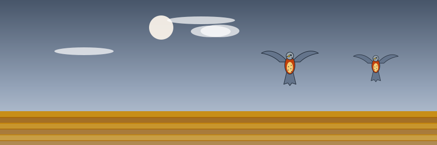
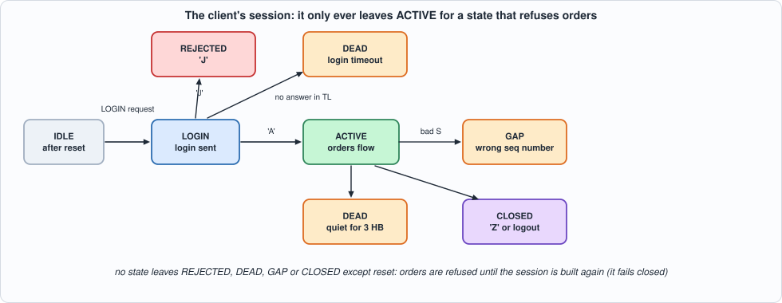
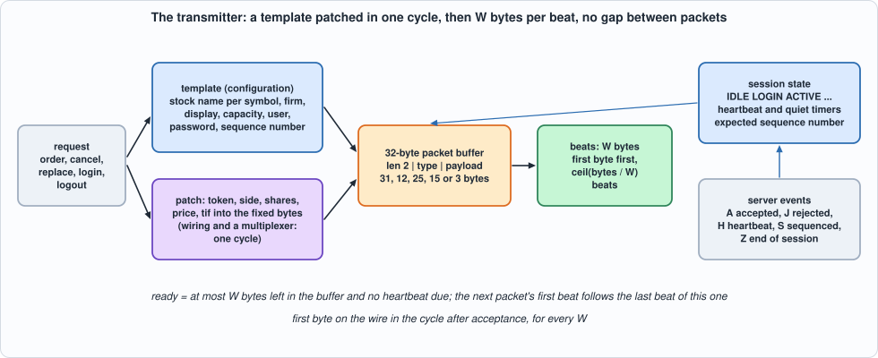
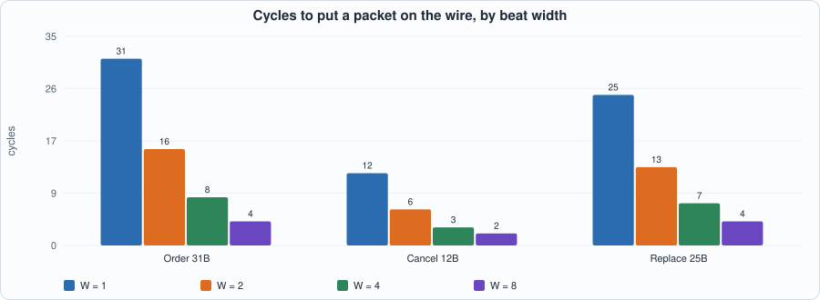
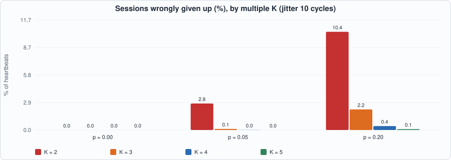

24. Order Entry: A Binary Protocol, Templates Patched in One Cycle, and the Client Side of a Session That Fails Closed¶

About the kestrels in this picture
- American kestrel (Falco sparverius) is the smallest falcon in North America and is found from Alaska to South America. The sexes differ in plumage: males have blue-grey wings, females are barred rufous. It hunts insects and small vertebrates from perches and by hovering.
- Lesser kestrel (Falco naumanni) breeds in colonies in Mediterranean Europe and Central Asia and migrates to Africa for the winter. It feeds largely on large insects and nests in cavities in old buildings and cliffs.
The scene is imaginary and the birds are stylised drawings.
What you will see: the gate of Chapter 23 says an order may go; this chapter puts it on the wire. An order entry protocol is a stream of small fixed-layout binary messages inside a session (login, heartbeats, sequence numbers). The design that is fast is a template: everything in the message that does not change (the message type, the stock's name, the firm, the length) is already in registers, and the few fields that do (token, side, shares, price) are patched in by wiring, in one cycle, whatever the message; the 31 bytes then leave W at a time. Around it is the client side of the session as a small state machine that fails closed: it refuses orders until it has logged in, and it stops sending when the server falls silent or the sequence of its messages breaks. The chapter writes the protocol and the session as a specification (and checks the specification's bytes against Python's struct module), builds the transmitter, tests it beat for beat and cycle for cycle, and measures what the beat width buys.
What you need to know first: Chapter 16 (message layouts and the bytes of a protocol), Chapter 13 (timers and liveness) and Chapter 20 (a model in which time is part of the specification).
What this chapter builds: rtl/sess.sv (sess and the pin wrapper sess_syn), model/sess_gold.py (the protocol, the session, the closed loop and the stimulus), tb/sess_tb.sv, tools/ch24_run.py, tools/ch24_example_a.py, tools/ch24_example_b.py, tools/mut_ch24.py, tools/make_figs_ch24.py.
The protocol is the book's own
The packet layouts below are a simplified, OUCH- and SoupBinTCP-like protocol written from memory for this book. They are not any exchange's specification and have not been checked against one. The engineering (template patching, a session state machine, heartbeats and liveness, a sequence check) carries over; the field offsets and the message types do not, and a real exchange's certification suite is the test that matters before any of this touches a market.
Scope: what this chapter leaves out, on purpose
The transmit side only: the receive side is two events the unit is told about (a server packet's type and sequence number), not parsed here (Chapter 16's parser is the model for it). No retransmission: a gap in the server's sequence is the end of the session (GAP), as in the protocols this imitates. No TCP: the unit's output is a byte stream; Chapter 12 to 15's stack carries it. Beat widths 1 to 8 bytes; at most 15 symbols (NS <= 15, a 4-bit index); one request at a time, held until it is accepted. Cut-through is not built: the packet is formed completely before the first byte leaves (one cycle), so a field that arrives late could not be patched into a packet already leaving (Exercise 2). This is a model of a design, not a product.
The protocol and the session¶
model/sess_gold.py states the protocol in its docstring and in an encoder that builds each packet with bytes and int.to_bytes. A packet is a 2-byte length (of everything after it), a 1-byte type and a payload, all numbers big endian:
| packet | type | payload | bytes on the wire |
|---|---|---|---|
| login | L |
user(4) password(4) requested sequence number(4) | 15 |
| client heartbeat | R |
none | 3 |
| logout | O |
none | 3 |
| data | U |
enter order O: token(4) side(B/S) shares(4) stock(4) price(4) tif(4) firm(4) display(1) capacity(1) |
31 |
cancel X: token(4) shares(4) |
12 | ||
replace N: old token(4) new token(4) shares(4) price(4) tif(4) display(1) |
25 |
From the server the unit sees events (type, sequence number): A login accepted (the number the session continues from), J rejected, H heartbeat, S sequenced data (its number must be the next expected one), Z end of session.
Templates. The stock name of each symbol (a 4-byte name per symbol index), the firm, the display and capacity bytes, the user, the password and the requested sequence number are configuration, written at any time. An order is the template with the token, side, shares, price and tif patched in.
The session. States: IDLE after reset; LOGIN once a login request has been accepted; ACTIVE on A; REJECTED on J; DEAD if no answer comes within TL cycles of the login, or if nothing is heard from the server for 3 HB cycles in ACTIVE; CLOSED on Z or after a logout; GAP on an S whose number is not the expected one. No state leaves REJECTED, DEAD, GAP or CLOSED except reset: orders are refused until the session is built again. That is the fail-closed rule of Chapter 23 applied to a connection.

Figure 24.1: the client's session states.Requests are offered one at a time and held until accepted: ORDER, CANCEL, REPLACE, LOGIN, LOGOUT. The unit answers each, in the cycle after it accepts it: OK (the packet is on its way), REFUSED (the session is not in the state that allows it: LOGIN is allowed in IDLE, the others in ACTIVE) or BADSYM (an order for a symbol index of NS or more). A refused request sends nothing.
Heartbeats. In ACTIVE, if HB cycles have passed since a packet was last loaded, a heartbeat is sent in the first cycle the transmitter is free, ahead of any request (the request waits one cycle: ready is low in that cycle).
Time. ready is high when the transmitter has at most W bytes left (the last beat is leaving, or nothing) and no heartbeat is due. A packet accepted in cycle a is on the wire in cycles a + 1 to a + ceil(bytes / W), one beat per cycle, and the next packet's first beat can follow in the very next cycle: no gap between packets.
#!/usr/bin/env python3
"""Chapter 24: the specification of the order-entry transmitter: a binary order protocol, pre-built message templates, and the client side of a session (login, heartbeats, liveness, sequence checking). THE PROTOCOL IS A SIMPLIFIED, OUCH- AND SOUPBINTCP-LIKE ONE WRITTEN FOR THIS BOOK FROM MEMORY; it is NOT any exchange's specification and has not been checked against one.
PACKETS (client to server), all numbers big endian: a 2-byte length (of everything after it), a 1-byte type, a payload.
LOGIN 'L': user(4) password(4) requested sequence number(4) 15 bytes on the wire
HEARTBEAT 'R': (nothing) 3
LOGOUT 'O': (nothing) 3
DATA 'U': a message: ENTER 'O' token(4) side('B'/'S') shares(4) stock(4) price(4) tif(4) firm(4) display(1) capacity(1) 31 bytes on the wire
CANCEL 'X' token(4) shares(4) 12
REPLACE 'N' old token(4) new token(4) shares(4) price(4) tif(4) display(1) 25
PACKETS FROM THE SERVER the unit sees, as events (type, sequence number): 'A' login accepted (the sequence number the session continues from), 'J' login rejected, 'H' heartbeat, 'S' sequenced data (its number must be the next expected), 'Z' end of session.
TEMPLATES. The stock name of each symbol index (4 bytes), the user, the password, the requested sequence number, the firm and the display and capacity bytes are CONFIGURATION (writes, any time); an order is a template whose fixed bytes are already there and whose token, side, shares, price and tif are patched in: one cycle, whatever the packet. The packet then leaves W bytes per beat, first byte in the high byte of the beat; the last beat has nbytes <= W valid bytes (the rest 0).
REQUESTS (one offered at a time, held until accepted; accepted in a cycle in which `ready`): ORDER(token, sym, side, shares, price, tif), CANCEL(token, shares), REPLACE(old, new, shares, price, tif), LOGIN, LOGOUT. The answer (the cycle after acceptance): OK (the packet is on its way), REFUSED (the session is not in the state that allows it) or BADSYM (an ORDER for a symbol index of NS or more). A refused request sends nothing. LOGIN is allowed in IDLE; ORDER, CANCEL, REPLACE and LOGOUT in ACTIVE.
SESSION STATES: IDLE (after reset) -> LOGIN (a LOGIN request was accepted) -> ACTIVE ('A') | REJECTED ('J') | DEAD (no answer within TL cycles); ACTIVE -> CLOSED (LOGOUT accepted, or 'Z') | GAP ('S' with a number other than the expected one: the stream lost or repeated a message) | DEAD (nothing heard from the server for 3 HB cycles). No state leaves REJECTED, CLOSED, GAP or DEAD but reset: orders are refused until the session is built again, which is FAILING CLOSED.
HEARTBEATS. In ACTIVE, if HB cycles pass since a packet was last started (any packet), a HEARTBEAT is sent in the first cycle the transmitter is free, ahead of any request (the request waits: ready is low in that cycle).
TIME. ready(c) = the transmitter has at most W bytes left (the last beat is leaving, or nothing) and no heartbeat is due. A packet accepted in cycle a is on the wire in cycles a + 1 to a + ceil(bytes / W), one beat per cycle, and the next packet's first beat can follow in the very next cycle. hb counts cycles in ACTIVE since the last packet was loaded; rx counts cycles since the server was last heard ('H', 'A', or an in-order 'S'); a login timer counts cycles in LOGIN."""
import random
IDLE, LOGIN, ACTIVE, REJECTED, DEAD, CLOSED, GAP = range(7)
SN = ["IDLE", "LOGIN", "ACTIVE", "REJECTED", "DEAD", "CLOSED", "GAP"]
ORDER, CANCEL, REPLACE, LOGINQ, LOGOUT = range(5)
KN = ["ORDER", "CANCEL", "REPLACE", "LOGIN", "LOGOUT"]
OK, REFUSED, BADSYM = range(3)
RN = ["OK", "REFUSED", "BADSYM"]
M = 0xFFFFFFFF
def be(x, n): return (x & ((1 << (8 * n)) - 1)).to_bytes(n, "big")
def packet(kind, r, cfg, ns):
"""The bytes of the packet for request r (a dict) with configuration cfg: the specification of the encoder, written with bytes and not with the hardware's concatenation."""
if kind == ORDER:
body = b"U" + b"O" + be(r["tok"], 4) + (b"S" if r["side"] else b"B") + be(r["shares"], 4) + cfg["stock"][r["sym"]] + be(r["px"], 4) + be(r["tif"], 4) + cfg["firm"] + be(cfg["display"], 1) + be(cfg["capacity"], 1)
elif kind == CANCEL: body = b"U" + b"X" + be(r["tok"], 4) + be(r["shares"], 4)
elif kind == REPLACE: body = b"U" + b"N" + be(r["tok"], 4) + be(r["tok2"], 4) + be(r["shares"], 4) + be(r["px"], 4) + be(r["tif"], 4) + be(cfg["display"], 1)
elif kind == LOGINQ: body = b"L" + cfg["user"] + cfg["pw"] + be(cfg["seq"], 4)
elif kind == LOGOUT: body = b"O"
else: body = b"R" # a heartbeat
return be(len(body), 2) + body
HEARTBEAT = -1
def new_cfg(ns): return dict(stock=[b"\0\0\0\0"] * ns, user=b"\0\0\0\0", pw=b"\0\0\0\0", seq=0, firm=b"\0\0\0\0", display=0, capacity=0)
def apply_cfg(cfg, c):
what, sym, data = c
if what == 0:
if sym < len(cfg["stock"]): cfg["stock"][sym] = be(data, 4) # a write for a symbol index that does not exist is ignored
elif what == 1: cfg["user"] = be(data, 4)
elif what == 2: cfg["pw"] = be(data, 4)
elif what == 3: cfg["firm"] = be(data, 4)
elif what == 4: cfg["display"] = (data >> 8) & 0xFF; cfg["capacity"] = data & 0xFF
elif what == 5: cfg["seq"] = data & M
def run(cycles, w=8, ns=4, hb=20, tl=60):
"""Closed loop. cycles[c] = dict(req=(kind, dict), rx=(type, seq), cfg=(what, sym, data)), any subset; a req is offered from the cycle it appears in until it is accepted (the next only after); cycle 0 is the first cycle after reset. -> dict(rows, packets, lines) with lines[c] = (the request on the pins in cycle c or None, rx, cfg) and rows[c] = (ready, beat valid, beat (int), last, nbytes, state, expected seq, answer valid, answer) as visible in cycle c, and packets = [(cycle accepted, kind, bytes)]."""
cfg = new_cfg(ns); st = IDLE; exp = 0; tx = b""; hbc = 0; rxc = 0; ltc = 0; ans = None; rows = []; lines = []; packets = []; qi = 0; reqs = [cy["req"] for cy in cycles if "req" in cy]; at = [c for c, cy in enumerate(cycles) if "req" in cy]; held = None; n = len(cycles)
for c in range(n + 40):
cy = cycles[c] if c < n else {}
hb_due = st == ACTIVE and hbc >= hb
ready = 1 if (len(tx) <= w and not hb_due) else 0
if held is None and qi < len(reqs) and at[qi] <= c: held = reqs[qi]; qi += 1
lines.append((held, cy.get("rx"), cy.get("cfg")))
data = int.from_bytes(tx[:w] + b"\0" * (w - len(tx[:w])), "big") if tx else 0
rows.append((ready, 1 if tx else 0, data, 1 if (tx and len(tx) <= w) else 0, min(len(tx), w), st, exp, 1 if ans is not None else 0, ans if ans is not None else 0))
# the end of the cycle: the transmitter advances and may load; the server's packet and the timers move the state; an accepted request's transition comes last
tx = tx[w:]; loaded = False; new_ans = None; acc = None
if hb_due and len(tx) == 0: tx = packet(HEARTBEAT, None, cfg, ns); loaded = True; packets.append((c, HEARTBEAT, tx))
elif held is not None and ready:
kind, r = held; held = None
allowed = (st == IDLE) if kind == LOGINQ else (st == ACTIVE)
if not allowed: new_ans = REFUSED
elif kind == ORDER and r["sym"] >= ns: new_ans = BADSYM
else: new_ans = OK; tx = packet(kind, r, cfg, ns); loaded = True; acc = kind; packets.append((c, kind, tx))
nst = st; heard = False; rx = cy.get("rx")
if rx is not None:
t, sq = rx
if st == LOGIN and t == "A": nst = ACTIVE; exp = sq
elif st == LOGIN and t == "J": nst = REJECTED
elif t == "Z" and st in (LOGIN, ACTIVE): nst = CLOSED
elif st == ACTIVE and t == "H": heard = True
elif st == ACTIVE and t == "S":
if sq == exp: exp = (exp + 1) & M; heard = True
else: nst = GAP
if st == LOGIN and nst == LOGIN:
ltc += 1
if ltc >= tl: nst = DEAD
if st == ACTIVE and nst == ACTIVE:
rxc = 0 if heard else rxc + 1
if rxc >= 3 * hb: nst = DEAD
if nst == ACTIVE: hbc = 0 if (loaded or st != ACTIVE) else hbc + 1
else: hbc = 0
if acc == LOGINQ: nst = LOGIN; ltc = 0
elif acc == LOGOUT: nst = CLOSED
if "cfg" in cy: apply_cfg(cfg, cy["cfg"])
st = nst; ans = new_ans
return dict(rows=rows, packets=packets, lines=lines)
def expected_rows(res): return [(c,) + tuple(r) for c, r in enumerate(res["rows"])]
def write_stim(path, lines, seed=1):
"""One line per cycle, the layout of tb/sess_tb.sv: request (held) bits 0..168, server packet 169..209, configuration write 210..249; junk where not valid. 64 hex digits."""
rng = random.Random(seed)
with open(path, "w") as f:
for q, rx, c in lines:
kind, r = q if q else (rng.randrange(5), dict(tok=rng.getrandbits(32), tok2=rng.getrandbits(32), sym=rng.randrange(16), side=rng.randrange(2), shares=rng.getrandbits(32), px=rng.getrandbits(32), tif=rng.getrandbits(32)))
r = {**dict(tok=0, tok2=0, sym=0, side=0, shares=0, px=0, tif=0), **r}
v = (1 if q else 0) | (kind << 1) | (r["tok"] << 4) | (r["tok2"] << 36) | (r["sym"] << 68) | (r["side"] << 72) | (r["shares"] << 73) | (r["px"] << 105) | (r["tif"] << 137)
t, sq = rx if rx else (rng.choice("AJHSZ"), rng.getrandbits(32))
v |= ((1 if rx else 0) << 169) | (ord(t) << 170) | (sq << 178)
what, sym, data = c if c else (rng.randrange(6), rng.randrange(16), rng.getrandbits(32))
v |= ((1 if c else 0) << 210) | (what << 211) | (sym << 214) | (data << 218)
f.write("%064x\n" % v)
return len(lines)
if __name__ == "__main__":
# 1. the encoder, byte by byte, worked out by hand (stock "ABCD", firm "FIR0", display 'Y' = 0x59, capacity 0x43 'C', user "USER", password "PASS")
cfg = new_cfg(2); cfg["stock"][0] = b"ABCD"; cfg["firm"] = b"FIR0"; cfg["display"] = 0x59; cfg["capacity"] = 0x43; cfg["user"] = b"USER"; cfg["pw"] = b"PASS"; cfg["seq"] = 7
o = packet(ORDER, dict(tok=1, sym=0, side=1, shares=100, px=0x1234, tif=0, tok2=0), cfg, 2)
assert o == bytes.fromhex("001d" "55" "4f" "00000001" "53" "00000064" "41424344" "00001234" "00000000" "46495230" "59" "43") and len(o) == 31
assert packet(CANCEL, dict(tok=2, shares=0), cfg, 2) == bytes.fromhex("000a" "55" "58" "00000002" "00000000") and packet(REPLACE, dict(tok=2, tok2=3, shares=5, px=6, tif=7), cfg, 2) == bytes.fromhex("0017" "55" "4e" "00000002" "00000003" "00000005" "00000006" "00000007" "59")
assert packet(LOGINQ, {}, cfg, 2) == bytes.fromhex("000d" "4c" "55534552" "50415353" "00000007") and packet(HEARTBEAT, None, cfg, 2) == bytes.fromhex("000152") and packet(LOGOUT, {}, cfg, 2) == bytes.fromhex("00014f")
assert packet(ORDER, dict(tok=1, sym=0, side=0, shares=1, px=1, tif=1, tok2=0), cfg, 2)[8:9] == b"B" # side 0 is a buy
# 2. time, hand-simulated: W = 8, NS = 2, HB = 4 (so the server is given up after 12 quiet cycles), TL = 6
L = lambda c, k, v: dict(c, **{k: v})
base = [dict(cfg=(0, 0, 0x41424344)), dict(cfg=(3, 0, 0x46495230)), dict(cfg=(4, 0, 0x5943)), dict(cfg=(1, 0, 0x55534552)), dict(cfg=(2, 0, 0x50415353)), dict(cfg=(5, 0, 7)), dict(), dict(req=(LOGINQ, {})), dict(), dict(), dict()] # LOGIN offered in cycle 7
r = run(base + [dict(rx=("A", 50))] + [dict() for _ in range(30)], 8, 2, 4, 6)["rows"] # row fields: ready, beat valid, beat, last, nbytes, state, expected, answer valid, answer
assert [r[c][1] for c in range(7, 12)] == [0, 1, 1, 0, 0] and r[8][3] == 0 and r[8][4] == 8 and r[9][3] == 1 and r[9][4] == 7 # accepted in cycle 7: beats in 8 (8 bytes) and 9 (the last 7); ready is low in cycle 8 (15 bytes left), high in 9 (7 <= 8)
assert r[8][7:] == (1, OK) and r[7][5] == IDLE and r[8][5] == LOGIN # the answer and the new state are visible in cycle 8
assert r[10][5] == LOGIN and r[11][5] == LOGIN and r[12][5] == ACTIVE and r[12][6] == 50 # 'A' offered in cycle 11 takes effect for cycle 12; the expected number is the one given
rr = run(base[:7] + [dict(req=(LOGINQ, {}))] + [dict() for _ in range(12)], 8, 2, 4, 6)["rows"]
assert [rr[c][5] for c in range(8, 16)] == [LOGIN] * 6 + [DEAD, DEAD] # the login timer: the request is accepted in cycle 7, LOGIN from cycle 8, six quiet cycles (8..13) and DEAD from cycle 14
act = run(base + [dict(rx=("A", 50))] + [dict() for _ in range(40)], 8, 2, 4, 6) # ACTIVE from cycle 12: hb counts 0 in 12, 1 in 13, 2, 3, 4 in cycle 16 -> due: a heartbeat is loaded at the end of 16 and its beat is in cycle 17
a = act["rows"]; assert a[16][0] == 0 and a[17][1] == 1 and a[17][3] == 1 and a[17][4] == 3 and a[17][2] == 0x0001520000000000 and (16, HEARTBEAT, bytes.fromhex("000152")) in act["packets"]
assert [a[c][5] for c in range(12, 26)] == [ACTIVE] * 12 + [DEAD, DEAD] # nothing heard from the server: the quiet counter is 0 in cycle 12 and 11 in cycle 23, the end of cycle 23 makes it 12 = 3 HB: DEAD from cycle 24
hb2 = run(base + [dict(rx=("A", 50)), dict(), dict(), dict(rx=("H", 0))] + [dict() for _ in range(40)], 8, 2, 4, 6)["rows"]
assert [hb2[c][5] for c in range(12, 40)].index(DEAD) + 12 == 27 and hb2[26][5] == ACTIVE # a server heartbeat in cycle 14 restarts the quiet count: 0 in cycle 15, 11 in cycle 26, so DEAD from cycle 27
sq = run(base + [dict(rx=("A", 50)), dict(), dict(rx=("S", 50)), dict(rx=("S", 51)), dict(rx=("S", 53)), dict(), dict()], 8, 2, 4, 6)["rows"]
assert [sq[c][6] for c in range(12, 19)] == [50, 50, 51, 52, 52, 52, 52] and [sq[c][5] for c in range(12, 19)] == [ACTIVE] * 4 + [GAP] * 3 # S 50 (cycle 13) and S 51 (14) are in order (expected 51 from cycle 14, 52 from 15); S 53 (15) is not 52: GAP from cycle 16, the number stays
# 3. requests: refused before ACTIVE, a symbol that does not exist, a packet of 31 bytes in 4 beats
ra = run(base[:6] + [dict(req=(ORDER, dict(tok=1, sym=0, side=0, shares=1, px=1, tif=0)))] + base[7:] + [dict(rx=("A", 50)), dict(), dict(req=(ORDER, dict(tok=1, sym=2, side=0, shares=1, px=1, tif=0))), dict(req=(ORDER, dict(tok=2, sym=1, side=1, shares=1, px=1, tif=0))), dict(), dict(), dict(), dict()], 8, 2, 4, 6)
r2 = ra["rows"]
assert r2[7][7:] == (1, REFUSED) and r2[8][7:] == (1, OK) and [p[1] for p in ra["packets"]][:3] == [LOGINQ, ORDER, HEARTBEAT] # the order offered in cycle 6 (IDLE) is refused and sends nothing; the login offered in 7 is accepted
assert r2[14][7:] == (1, BADSYM) and r2[15][7:] == (1, OK) and [r2[c][1] for c in range(14, 20)] == [0, 1, 1, 1, 1, 0] and [r2[c][4] for c in range(15, 19)] == [8, 8, 8, 7] and r2[18][3] == 1 # sym 2 does not exist (NS = 2): nothing sent; the next order is on the wire in cycles 15 to 18: 8 + 8 + 8 + 7 bytes
# 4. more states and requests, each worked by hand on the same timeline (ACTIVE from cycle 12, the count 0 in 12)
tail = [dict() for _ in range(30)]
def at(c, **kw): x = [dict(d) for d in base + [dict(rx=("A", 50))] + [dict() for _ in range(40)]]; x[c].update(kw); return x
g1 = run(at(13, req=(LOGINQ, {})), 8, 2, 4, 6); assert g1["rows"][14][7:] == (1, REFUSED) and g1["rows"][14][5] == ACTIVE and all(k != LOGINQ for _, k, _ in g1["packets"][1:]) # a second login while ACTIVE is refused and sends nothing
g2 = run(at(13, rx=("S", 99))[:15] + [dict(req=(ORDER, dict(tok=1, sym=0, side=0, shares=1, px=1, tif=0)))] + [dict() for _ in range(5)], 8, 2, 4, 6)
assert g2["rows"][14][5] == GAP and g2["rows"][16][7:] == (1, REFUSED) # a wrong number in cycle 13: GAP from 14; an order offered in cycle 15 is refused
g3 = run(base[:9] + [dict(rx=("Z", 0))] + base[10:] + [dict(rx=("A", 50))] + tail, 8, 2, 4, 6); assert g3["rows"][10][5] == CLOSED and g3["rows"][13][5] == CLOSED # an end of session in LOGIN (cycle 9): CLOSED from cycle 10, and a later 'A' changes nothing
g4 = run(at(13, req=(LOGOUT, {})), 8, 2, 4, 6); assert g4["rows"][14][5] == CLOSED and g4["rows"][14][7:] == (1, OK) and g4["rows"][14][1:5] == (1, 0x00014F0000000000, 1, 3) # LOGOUT accepted in cycle 13: its 3 bytes are on the wire in cycle 14, with the answer and the state CLOSED
g5 = run(at(14, req=(CANCEL, dict(tok=1, shares=0))), 8, 2, 4, 6); assert [p[:2] for p in g5["packets"]][1:3] == [(14, CANCEL), (19, HEARTBEAT)] # a packet restarts the heartbeat count: the cancel loaded at the end of 14 gives the count 0 in 15 and 4 in 19, the heartbeat goes in 19 (not in 16)
cf = at(6, cfg=(0, 2, 0x5A5A5A5A)); cf[16]["req"] = (ORDER, dict(tok=1, sym=0, side=0, shares=1, px=1, tif=0)); g6 = run(cf, 8, 2, 4, 6); o6 = [p for p in g6["packets"] if p[1] == ORDER][0][2]; assert o6[13:17] == b"ABCD" # a stock write for symbol 2 (NS = 2) is ignored: symbol 0 keeps its name
assert r[8][0] == 0 and r[9][0] == 1 and r[7][0] == 1 # ready: 1 when idle, 0 in cycle 8 (15 bytes in the transmitter), 1 in 9 (7 left)
print("sess_gold: hand-checked scenarios passed")
The self-test works out by hand: the bytes of every kind of packet (written as hexadecimal literals); the timeline of a login (accepted in cycle 7, beats of 8 and 7 bytes in cycles 8 and 9, ready low in 8 and high in 9, ACTIVE from cycle 12); the login timer (DEAD six cycles after the login); the quiet timer (DEAD twelve cycles after the last word from the server, and a server heartbeat that restarts the count); a sequence gap; refusals in every state; a symbol that does not exist; and the heartbeat that goes ahead of a request.
The hardware¶

Figure 24.2: the transmitter.- One cycle to form the packet. The template's fixed bytes are registers; each packet kind is a concatenation:
{16'h001D, 8'h55, 8'h4F, in_tok, side_c, in_shares, stk, in_px, in_tif, firm, display, capacity, 8'h00}is a 32-byte word whose bytes are the order's, in the order they leave. Picking the packet is a multiplexer on the request kind; loading it is one register write. There is no byte-by-byte assembly, so the time to the first byte does not depend on the packet or onW. - The beats. The 32-byte buffer and a byte count
txlen; each cycle the topWbytes are the beat (o_data), and the buffer shifts left8 Wbits. The last beat hastxlen <= Wbytes; the rest of its bytes are zero. A new packet is loaded in the cycle the last beat leaves. - The session is
st, three counters (hbcsince the last packet,rxcsince the server was last heard,ltcsince the login) and the expected sequence number; onealways_combcomputes the next state from the server's event and the timers, and an accepted request's transition (LOGIN or CLOSED) is applied last. - Simplifications that the mutation run found (see below): a counter or a reset that cannot matter is not there. The session goes through LOGIN and ACTIVE once between resets, so
ltcandrxcneed no clearing on entry; the heartbeat count is cleared by any cycle outside ACTIVE, so it needs no reset.
// Chapter 24: the order-entry transmitter. A request (order, cancel, replace, login, logout) becomes a packet in ONE cycle: the fixed bytes of the template (type, length, stock name of the symbol, firm, display, capacity, user, password) are already in registers and the request's fields are patched into the right positions of a 32-byte buffer; the buffer then leaves W bytes per beat, first byte first, with no gap between packets. The client side of the session (login, heartbeats, liveness, the expected sequence number) is a small state machine around it. The specification is in model/sess_gold.py (a simplified, OUCH- and SoupBinTCP-like protocol of this book).
module sess #(parameter int W = 8, parameter int NS = 4, parameter int HB = 20, parameter int TL = 60) (
input logic clk, input logic rst,
input logic in_valid, input logic [2:0] in_kind, input logic [31:0] in_tok, input logic [31:0] in_tok2, input logic [3:0] in_sym, input logic in_side, input logic [31:0] in_shares, input logic [31:0] in_px, input logic [31:0] in_tif,
output logic in_ready,
input logic rx_valid, input logic [7:0] rx_type, input logic [31:0] rx_seq,
input logic cfg_valid, input logic [2:0] cfg_what, input logic [3:0] cfg_sym, input logic [31:0] cfg_data,
output logic o_valid, output logic [8*W-1:0] o_data, output logic o_last, output logic [3:0] o_nb, output logic [2:0] o_state, output logic [31:0] o_exp, output logic o_rv, output logic [1:0] o_res);
localparam logic [2:0] IDLE = 3'd0, LOGIN = 3'd1, ACTIVE = 3'd2, REJECTED = 3'd3, DEAD = 3'd4, CLOSED = 3'd5, GAP = 3'd6;
localparam logic [2:0] K_ORDER = 3'd0, K_CANCEL = 3'd1, K_REPLACE = 3'd2, K_LOGIN = 3'd3, K_LOGOUT = 3'd4;
localparam int TW = 16;
// ---- configuration: the fixed parts of the templates
logic [31:0] stock [0:NS-1]; logic [31:0] user, pw, firm, reqseq; logic [7:0] display, capacity;
always_ff @(posedge clk) if (rst) begin
for (int i = 0; i < NS; i++) stock[i] <= '0;
user <= '0; pw <= '0; firm <= '0; reqseq <= '0; display <= '0; capacity <= '0;
end else if (cfg_valid) begin
case (cfg_what)
3'd0: for (int i = 0; i < NS; i++) if (cfg_sym == 4'(i)) stock[i] <= cfg_data;
3'd1: user <= cfg_data;
3'd2: pw <= cfg_data;
3'd3: firm <= cfg_data;
3'd4: begin display <= cfg_data[15:8]; capacity <= cfg_data[7:0]; end
3'd5: reqseq <= cfg_data;
default: ;
endcase
end
// ---- state, timers, the transmitter
logic [2:0] st; logic [31:0] expseq; logic [TW-1:0] hbc, rxc, ltc; logic [255:0] tx; logic [5:0] txlen; logic rv; logic [1:0] res;
wire hb_due = (st == ACTIVE) && (hbc >= TW'(HB));
wire tx_free = (txlen <= 6'(W));
assign in_ready = tx_free && !hb_due;
assign o_valid = (txlen != 0); assign o_data = tx[255 -: 8*W]; assign o_last = (txlen != 0) && tx_free; assign o_nb = tx_free ? 4'(txlen) : 4'(W);
assign o_state = st; assign o_exp = expseq; assign o_rv = rv; assign o_res = res;
// ---- the packets: the template with the request's fields patched in (byte 0 is the high byte)
wire [31:0] stk = (in_sym < 4'(NS)) ? stock[in_sym[$clog2(NS > 1 ? NS : 2)-1:0]] : 32'd0;
wire [7:0] side_c = in_side ? 8'h53 : 8'h42;
wire [255:0] p_order = {16'h001D, 8'h55, 8'h4F, in_tok, side_c, in_shares, stk, in_px, in_tif, firm, display, capacity, 8'h00};
wire [255:0] p_cancel = {16'h000A, 8'h55, 8'h58, in_tok, in_shares, 160'd0};
wire [255:0] p_replace = {16'h0017, 8'h55, 8'h4E, in_tok, in_tok2, in_shares, in_px, in_tif, display, 56'd0};
wire [255:0] p_login = {16'h000D, 8'h4C, user, pw, reqseq, 136'd0};
wire [255:0] p_hb = {16'h0001, 8'h52, 232'd0};
wire [255:0] p_logout = {16'h0001, 8'h4F, 232'd0};
// ---- the decisions of this cycle
wire accept = in_valid && in_ready;
wire allowed = (in_kind == K_LOGIN) ? (st == IDLE) : (st == ACTIVE);
wire badsym = (in_kind == K_ORDER) && (in_sym >= 4'(NS));
wire load_req = accept && allowed && !badsym && (in_kind <= K_LOGOUT);
wire load_hb = hb_due && tx_free;
wire loaded = load_req || load_hb;
logic [255:0] pk; logic [5:0] pklen;
always_comb begin
pk = p_hb; pklen = 6'd3;
if (load_req) case (in_kind)
K_ORDER: begin pk = p_order; pklen = 6'd31; end
K_CANCEL: begin pk = p_cancel; pklen = 6'd12; end
K_REPLACE: begin pk = p_replace; pklen = 6'd25; end
K_LOGIN: begin pk = p_login; pklen = 6'd15; end
default: begin pk = p_logout; pklen = 6'd3; end
endcase
end
logic [2:0] nst; logic heard; logic [31:0] nexp;
always_comb begin
nst = st; heard = 1'b0; nexp = expseq;
if (rx_valid) begin
if (st == LOGIN && rx_type == 8'h41) begin nst = ACTIVE; nexp = rx_seq; end
else if (st == LOGIN && rx_type == 8'h4A) nst = REJECTED;
else if (rx_type == 8'h5A && (st == LOGIN || st == ACTIVE)) nst = CLOSED;
else if (st == ACTIVE && rx_type == 8'h48) heard = 1'b1;
else if (st == ACTIVE && rx_type == 8'h53) begin if (rx_seq == expseq) begin nexp = expseq + 1'b1; heard = 1'b1; end else nst = GAP; end
end
if (st == LOGIN && nst == LOGIN && ltc + 1'b1 >= TW'(TL)) nst = DEAD;
if (st == ACTIVE && nst == ACTIVE && !heard && rxc + 1'b1 >= TW'(3 * HB)) nst = DEAD;
end
always_ff @(posedge clk) begin
if (rst) begin st <= IDLE; expseq <= '0; rxc <= '0; ltc <= '0; txlen <= '0; rv <= 1'b0; res <= '0; end // hbc needs no reset: it is cleared in the first cycle outside ACTIVE
else begin
rv <= accept; res <= !allowed ? 2'd1 : (badsym ? 2'd2 : 2'd0);
// the transmitter
if (loaded) begin tx <= pk; txlen <= pklen; end
else begin tx <= tx << (8 * W); txlen <= tx_free ? 6'd0 : txlen - 6'(W); end
// timers and state
expseq <= nexp;
if (st == LOGIN && nst == LOGIN) ltc <= ltc + 1'b1;
if (st == ACTIVE && nst == ACTIVE) rxc <= heard ? '0 : rxc + 1'b1;
hbc <= (loaded || st != ACTIVE) ? '0 : hbc + 1'b1; // counts only in ACTIVE (hb_due says so); cleared by any packet
if (load_req && in_kind == K_LOGIN) st <= LOGIN; // ltc and rxc are 0 from reset: the session goes through LOGIN and ACTIVE once
else if (load_req && in_kind == K_LOGOUT) st <= CLOSED;
else st <= nst;
end
end
endmodule
// sess_syn: the same design behind a handful of pins, ONLY so that it fits a chip for the place-and-route runs: the inputs are shifted in serially, the outputs registered and folded into one 16-bit word.
module sess_syn #(parameter int W = 8, parameter int NS = 4, parameter int HB = 20, parameter int TL = 60) (input logic clk, input logic rst, input logic si, input logic sh, output logic [15:0] info);
logic [319:0] iv; logic ready, ov_, last, rv; logic [8*W-1:0] data; logic [3:0] nb; logic [2:0] state; logic [31:0] exp_; logic [1:0] res;
always_ff @(posedge clk) if (sh) iv <= {iv[318:0], si};
sess #(.W(W), .NS(NS), .HB(HB), .TL(TL)) u (.clk(clk), .rst(rst), .in_valid(iv[0]), .in_kind(iv[3:1]), .in_tok(iv[35:4]), .in_tok2(iv[67:36]), .in_sym(iv[71:68]), .in_side(iv[72]), .in_shares(iv[104:73]), .in_px(iv[136:105]), .in_tif(iv[168:137]), .in_ready(ready),
.rx_valid(iv[169]), .rx_type(iv[177:170]), .rx_seq(iv[209:178]), .cfg_valid(iv[210]), .cfg_what(iv[213:211]), .cfg_sym(iv[217:214]), .cfg_data(iv[249:218]),
.o_valid(ov_), .o_data(data), .o_last(last), .o_nb(nb), .o_state(state), .o_exp(exp_), .o_rv(rv), .o_res(res));
logic [15:0] x, r1; always_comb x = 16'(data) ^ 16'(data >> 16) ^ 16'(data >> 32) ^ 16'(data >> 48) ^ 16'(exp_) ^ {state, nb, res, rv, last, ov_, ready, 2'b0};
always_ff @(posedge clk) begin r1 <= x; info <= r1; end
endmodule
The tests¶
// Chapter 24 testbench for sess: line k of out/sess_stim.hex (64 hex digits) is everything on the pins in cycle k, cycle 0 being the first cycle after reset: the request (held on the pins until the unit accepts it: model/sess_gold.py run() decides which cycle), bits 0..168 (valid, kind, token, new token, symbol, side, shares, price, tif); a server packet, bits 169..209 (valid, type, sequence number); a configuration write, bits 210..249 (valid, what, symbol, data). Before every clock edge it prints
// C <cycle> <in_ready> <o_valid> <o_data hex> <o_last> <o_nb> <state> <expected seq> <answer valid> <answer> (zeros when o_valid = 0)
`timescale 1ns/1ps
`ifndef NC
`define NC 1000
`endif
`ifndef W
`define W 8
`endif
`ifndef NS
`define NS 4
`endif
`ifndef HB
`define HB 20
`endif
`ifndef TL
`define TL 60
`endif
module sess_tb;
localparam int NC = `NC, W = `W;
logic clk = 0, rst = 1; logic [255:0] vec [0:NC-1]; int k, cyc = 0; logic run = 0;
logic in_valid = 0, in_side = 0, rx_valid = 0, cfg_valid = 0; logic [2:0] in_kind = '0, cfg_what = '0; logic [31:0] in_tok = '0, in_tok2 = '0, in_shares = '0, in_px = '0, in_tif = '0, rx_seq = '0, cfg_data = '0; logic [3:0] in_sym = '0, cfg_sym = '0; logic [7:0] rx_type = '0;
logic in_ready, o_valid, o_last, o_rv; logic [8*W-1:0] o_data; logic [3:0] o_nb; logic [2:0] o_state; logic [31:0] o_exp; logic [1:0] o_res;
sess #(.W(W), .NS(`NS), .HB(`HB), .TL(`TL)) dut (.clk(clk), .rst(rst), .in_valid(in_valid), .in_kind(in_kind), .in_tok(in_tok), .in_tok2(in_tok2), .in_sym(in_sym), .in_side(in_side), .in_shares(in_shares), .in_px(in_px), .in_tif(in_tif), .in_ready(in_ready),
.rx_valid(rx_valid), .rx_type(rx_type), .rx_seq(rx_seq), .cfg_valid(cfg_valid), .cfg_what(cfg_what), .cfg_sym(cfg_sym), .cfg_data(cfg_data),
.o_valid(o_valid), .o_data(o_data), .o_last(o_last), .o_nb(o_nb), .o_state(o_state), .o_exp(o_exp), .o_rv(o_rv), .o_res(o_res));
always #4 clk = ~clk;
`ifdef GARBAGE
initial begin // Icarus only: every register powers up with garbage, so that a reset that forgets one is seen
dut.st = 3'd2; dut.expseq = 32'd77; dut.hbc = 16'd9; dut.rxc = 16'd9; dut.ltc = 16'd9; dut.tx = {256{1'b1}}; dut.txlen = 6'd9; dut.rv = 1'b1; dut.res = 2'd2;
for (int i = 0; i < `NS; i++) dut.stock[i] = 32'hDEADBEEF; dut.user = 32'h11111111; dut.pw = 32'h22222222; dut.firm = 32'h33333333; dut.reqseq = 32'h44444444; dut.display = 8'h55; dut.capacity = 8'h66;
end
`endif
always @(posedge clk) if (run) begin
$display("C %0d %0d %0d %0h %0d %0d %0d %0d %0d %0d", cyc, in_ready, o_valid, o_valid ? o_data : '0, o_valid ? o_last : 1'b0, o_valid ? o_nb : 4'd0, o_state, o_exp, o_rv, o_rv ? o_res : 2'd0);
cyc++;
end
initial begin
$readmemh("out/sess_stim.hex", vec);
repeat (3) @(negedge clk); rst = 0;
for (k = 0; k < NC; k++) begin
in_valid = vec[k][0]; in_kind = vec[k][3:1]; in_tok = vec[k][35:4]; in_tok2 = vec[k][67:36]; in_sym = vec[k][71:68]; in_side = vec[k][72]; in_shares = vec[k][104:73]; in_px = vec[k][136:105]; in_tif = vec[k][168:137];
rx_valid = vec[k][169]; rx_type = vec[k][177:170]; rx_seq = vec[k][209:178]; cfg_valid = vec[k][210]; cfg_what = vec[k][213:211]; cfg_sym = vec[k][217:214]; cfg_data = vec[k][249:218];
run = 1; @(negedge clk);
end
in_valid = 0; rx_valid = 0; cfg_valid = 0; repeat (8) @(negedge clk); $finish;
end
endmodule
#!/usr/bin/env python3
"""Chapter 24: the running designs. (1) lint; (2) the model: the BYTES of every packet against an encoder written with Python's struct module (independent of the model's own encoder), and the session scenarios the stimulus contains; (3) the transmitter against the model, every beat (data, last, bytes), the state, the expected sequence number, `ready` and the answer to every request in every cycle, in two simulators, for five formats (beat width W, symbols, heartbeat interval, login timeout), on scenarios: a normal session, a rejected login, a login that is never answered, a server that falls silent, a sequence gap, an end of session (and one while logging in), a logout, server heartbeats on the very last cycle that saves the session, a session that was never configured, and random mixes with random server events."""
import os, random, struct, subprocess, sys
from collections import Counter
sys.path.insert(0, os.path.dirname(os.path.abspath(__file__))); sys.path.insert(0, os.path.join(os.path.dirname(os.path.abspath(__file__)), "..", "model"))
import flow, sess_gold as G
R_ = flow.ROOT; F_ = ["rtl/sess.sv", "tb/sess_tb.sv"]
def rows_rtl(res, cfg, simu="icarus", rtl=F_):
w, ns, hb, tl = cfg; n = G.write_stim(os.path.join(R_, "out", "sess_stim.hex"), res["lines"])
o = (flow.sim_icarus if simu == "icarus" else flow.sim_verilator)(rtl, "sess_tb", defines=(f"NC={n}", f"W={w}", f"NS={ns}", f"HB={hb}", f"TL={tl}") + (("GARBAGE",) if simu == "icarus" else ()))[1]
try: return [tuple(int(x, 16) if i == 3 else int(x) for i, x in enumerate(l.split()[1:])) for l in o.splitlines() if l.startswith("C ")]
except ValueError: return [("x",)]
def same(cy, cfg, simu="icarus", rtl=F_):
res = G.run(cy, *cfg); got = rows_rtl(res, cfg, simu, rtl); exp = G.expected_rows(res)
return got[:len(exp)] == exp and len(got) >= len(exp)
CONFIGS = [(8, 4, 20, 60), (1, 4, 20, 60), (2, 3, 9, 25), (4, 15, 12, 40), (8, 1, 7, 15)]
CFGW = [(0, 0, 0x41424344), (0, 1, 0x49424D20), (0, 2, 0x474F4F47), (0, 3, 0x4D534654), (1, 0, 0x55534552), (2, 0, 0x50415353), (3, 0, 0x46495230), (4, 0, 0x5943), (5, 0, 1000)]
def cfg_cycles(ns): return [dict(cfg=c) for c in CFGW if not (c[0] == 0 and c[1] >= ns)] + [dict(), dict()]
def rq(kind, rng, ns, **kw):
d = dict(tok=rng.getrandbits(32), tok2=rng.getrandbits(32), sym=rng.randrange(ns + (1 if rng.random() < .1 else 0)), side=rng.randrange(2), shares=rng.randint(1, 10 ** 6), px=rng.randint(1, 10 ** 6), tif=rng.choice([0, 99999, rng.getrandbits(32)])); d.update(kw); return (kind, d)
def scenario(kind, rng, w, ns, hb, tl, n=260):
cy = cfg_cycles(ns) if kind != "bare" else [dict(), dict()]; L = len(cy); cy += [dict() for _ in range(n)]
def put(c, k, v):
while c >= len(cy): cy.append(dict())
cy[c][k] = v
put(L + 2, "req", (G.LOGINQ, {}))
acc_at = L + 2 + rng.randint(4, 12)
if kind == "closelogin": put(acc_at - 2 if acc_at - 2 > L + 3 else L + 4, "rx", ("Z", 0)); put(acc_at + 5, "rx", ("A", 5)) # an end of session before the login is answered; a late 'A' changes nothing
elif kind == "silent": pass # no answer to the login: DEAD after TL
elif kind == "reject": put(acc_at, "rx", ("J", 0))
elif kind != "closelogin": put(acc_at, "rx", ("A", rng.getrandbits(32) if rng.random() < .3 else 1000))
seq = None
for c in range(acc_at + 3, acc_at + n - 10):
cyc = cy[c] if c < len(cy) else {}
if rng.random() < 0.3 and "req" not in cyc: put(c, "req", rq(rng.choice([G.ORDER, G.ORDER, G.ORDER, G.CANCEL, G.REPLACE, G.LOGINQ, G.ORDER]), rng, ns))
if kind in ("normal", "gap", "close", "logout", "random"):
sq = 1000
for c in range(acc_at + 5, acc_at + n - 10, 1):
if rng.random() < (1.0 / max(2, hb // 2)): put(c, "rx", rng.choice([("H", 0), ("S", sq)])); sq += 1 if cy[c]["rx"][0] == "S" else 0
if kind == "random":
for _ in range(3):
c = rng.randrange(acc_at + 5, acc_at + n - 10); put(c, "rx", rng.choice([("S", rng.getrandbits(32)), ("H", 0), ("A", 5), ("J", 0), ("Z", 0)]))
if rng.random() < .5:
c = rng.randrange(acc_at + 20, acc_at + n - 10); put(c, "req", (G.LOGOUT, {}))
if kind == "gap": put(acc_at + rng.randint(30, 80), "rx", ("S", 4242))
if kind == "close": put(acc_at + rng.randint(30, 80), "rx", ("Z", 0))
if kind == "logout": put(acc_at + rng.randint(30, 80), "req", (G.LOGOUT, {}))
if kind == "limit": # heartbeats from the server spaced exactly 3 HB apart (each is the last chance), then one cycle too late
c = acc_at
for _ in range(4): c += 3 * hb; put(c, "rx", ("H", 0))
c += 3 * hb + 1; put(c, "rx", ("H", 0))
if kind == "dead":
for c in range(acc_at + 5, acc_at + 60, max(3, hb // 2)): put(c, "rx", ("H", 0)) # the server speaks for a while, then falls silent
return cy
KINDS = ("normal", "reject", "silent", "dead", "gap", "close", "logout", "random", "closelogin", "limit", "bare")
def make(kind, seed, cfg): w, ns, hb, tl = cfg; return scenario(kind, random.Random(seed * 100 + hash(kind) % 97), *cfg)
def battery():
"""The mutation runs' test: five formats, the eight scenarios, Icarus. -> None or the first difference."""
for ci, cfg in enumerate(CONFIGS):
for kind in KINDS:
try: ok = same(make(kind, ci, cfg), cfg)
except Exception as x: return f"crash {type(x).__name__}"
if not ok: return f"{kind}, W {cfg[0]}, NS {cfg[1]}, HB {cfg[2]}, TL {cfg[3]}"
return None
def battery_model():
q = subprocess.run([sys.executable, "model/sess_gold.py"], cwd=R_, capture_output=True, text=True, timeout=300)
return None if q.returncode == 0 else "hand-checked scenarios"
def struct_packet(kind, r, cfg):
"""An independent encoder, with struct.pack (formats as written in the specification)."""
if kind == G.ORDER: return struct.pack(">HcccI c I 4s I I 4s B B".replace(" ", ""), 29, b"U", b"O", b"", r["tok"], b"S" if r["side"] else b"B", r["shares"], cfg["stock"][r["sym"]], r["px"], r["tif"], cfg["firm"], cfg["display"], cfg["capacity"]) if False else struct.pack(">H2sIc I4sII4sBB".replace(" ", ""), 29, b"UO", r["tok"], b"S" if r["side"] else b"B", r["shares"], cfg["stock"][r["sym"]], r["px"], r["tif"], cfg["firm"], cfg["display"], cfg["capacity"])
if kind == G.CANCEL: return struct.pack(">H2sII", 10, b"UX", r["tok"], r["shares"])
if kind == G.REPLACE: return struct.pack(">H2sIIIIIB", 23, b"UN", r["tok"], r["tok2"], r["shares"], r["px"], r["tif"], cfg["display"])
if kind == G.LOGINQ: return struct.pack(">Hc4s4sI", 13, b"L", cfg["user"], cfg["pw"], cfg["seq"])
if kind == G.LOGOUT: return struct.pack(">Hc", 1, b"O")
return struct.pack(">Hc", 1, b"R")
if __name__ == "__main__":
if "--battery-model" in sys.argv: print("RESULT", battery_model()); sys.exit(0)
if "--battery" in sys.argv: print("RESULT", battery()); sys.exit(0)
print("== 1. lint gate (Verilator -Wall --lint-only, Yosys 'check')")
p = subprocess.run(["verilator", "--lint-only", "-Wall", "--top-module", "sess", "rtl/sess.sv"], cwd=R_, capture_output=True, text=True); w_ = [l for l in (p.stdout + p.stderr).splitlines() if l.startswith("%Warning") and "DECLFILENAME" not in l]
y = subprocess.run(["yosys", "-p", "read_verilog -sv rtl/sess.sv; hierarchy -top sess; proc; opt_clean; check"], cwd=R_, capture_output=True, text=True).stdout
print(f" sess: Verilator warnings {len(w_)}, Yosys check problems {len([l for l in y.splitlines() if 'Found and reported' in l and ' 0 problems' not in l])}")
print("\n== 2. the model (python3 model/sess_gold.py); the bytes of 2,000 random packets of every kind against struct.pack; the scenarios (W 8, NS 4, HB 20, TL 60, seed 0)")
print(" " + subprocess.run([sys.executable, "model/sess_gold.py"], cwd=R_, capture_output=True, text=True).stdout.strip())
rng = random.Random(4); bad = 0; sizes = Counter()
for _ in range(2000):
cfg = G.new_cfg(4); cfg.update(user=rng.randbytes(4), pw=rng.randbytes(4), seq=rng.getrandbits(32), firm=rng.randbytes(4), display=rng.randrange(256), capacity=rng.randrange(256)); cfg["stock"] = [rng.randbytes(4) for _ in range(4)]
k = rng.choice([G.ORDER, G.CANCEL, G.REPLACE, G.LOGINQ, G.LOGOUT, G.HEARTBEAT]); r = rq(k, rng, 4)[1]; r["sym"] %= 4
a = G.packet(k, r, cfg, 4); b = struct_packet(k, r, cfg); bad += a != b; sizes[(k, len(a))] += 1
print(f" packets whose bytes differ from struct.pack: {bad} of 2000; sizes on the wire: " + ", ".join(f"{(['ORDER', 'CANCEL', 'REPLACE', 'LOGIN', 'LOGOUT'] + ['HEARTBEAT'])[k if k >= 0 else 5]} {n}" for (k, n) in sorted(set(sizes))))
for kind in KINDS:
cy = make(kind, 0, CONFIGS[0]); res = G.run(cy, *CONFIGS[0]); st = Counter(r[5] for r in res["rows"]); pk = Counter(G.KN[k] if k >= 0 else "HEARTBEAT" for _, k, _ in res["packets"]); an = Counter(G.RN[r[8]] for r in res["rows"] if r[7])
print(f" {kind:7s} states: " + ", ".join(f"{G.SN[s]} {n}" for s, n in sorted(st.items())) + " | packets: " + ", ".join(f"{k} {n}" for k, n in sorted(pk.items())) + " | answers: " + ", ".join(f"{k} {n}" for k, n in sorted(an.items())))
print("\n== 3. the transmitter against the model: beats, state, expected sequence number, ready and answers in every cycle")
print(f" {'scenario':8s} {'W':>2s} {'NS':>3s} {'HB':>3s} {'TL':>3s} | {'cycles':>7s} {'beats':>6s} {'packets':>8s} | {'Icarus':>7s} {'Verilator':>10s}")
for kind in KINDS:
for cfg in CONFIGS:
cy = make(kind, 1, cfg); res = G.run(cy, *cfg); i = same(cy, cfg); v = same(cy, cfg, "verilator")
print(f" {kind:8s} {cfg[0]:2d} {cfg[1]:3d} {cfg[2]:3d} {cfg[3]:3d} | {len(res['rows']):7d} {sum(r[1] for r in res['rows']):6d} {len(res['packets']):8d} | {'PASS' if i else 'FAIL':>7s} {'PASS' if v else 'FAIL':>10s}")
To run: python3 tools/ch24_run.py (a few minutes). Recorded output:
== 1. lint gate (Verilator -Wall --lint-only, Yosys 'check')
sess: Verilator warnings 0, Yosys check problems 0
== 2. the model (python3 model/sess_gold.py); the bytes of 2,000 random packets of every kind against struct.pack; the scenarios (W 8, NS 4, HB 20, TL 60, seed 0)
sess_gold: hand-checked scenarios passed
packets whose bytes differ from struct.pack: 0 of 2000; sizes on the wire: HEARTBEAT 3, ORDER 31, CANCEL 12, REPLACE 25, LOGIN 15, LOGOUT 3
normal states: IDLE 14, LOGIN 4, ACTIVE 293 | packets: CANCEL 11, HEARTBEAT 2, LOGIN 1, ORDER 40, REPLACE 11 | answers: OK 63, REFUSED 10
reject states: IDLE 14, LOGIN 8, REJECTED 289 | packets: LOGIN 1 | answers: OK 1, REFUSED 75
silent states: IDLE 14, LOGIN 60, DEAD 237 | packets: LOGIN 1 | answers: OK 1, REFUSED 69
dead states: IDLE 14, LOGIN 10, ACTIVE 115, DEAD 173 | packets: CANCEL 5, LOGIN 1, ORDER 15, REPLACE 1 | answers: BADSYM 2, OK 22, REFUSED 44
gap states: IDLE 14, LOGIN 8, ACTIVE 35, GAP 254 | packets: CANCEL 1, LOGIN 1, ORDER 7 | answers: OK 9, REFUSED 58
close states: IDLE 14, LOGIN 5, ACTIVE 36, CLOSED 256 | packets: CANCEL 1, LOGIN 1, ORDER 6, REPLACE 2 | answers: OK 10, REFUSED 71
logout states: IDLE 14, LOGIN 6, ACTIVE 59, CLOSED 232 | packets: CANCEL 2, LOGIN 1, LOGOUT 1, ORDER 6, REPLACE 3 | answers: OK 13, REFUSED 48
random states: IDLE 14, LOGIN 9, ACTIVE 14, GAP 274 | packets: CANCEL 1, LOGIN 1, REPLACE 1 | answers: OK 3, REFUSED 63
closelogin states: IDLE 14, LOGIN 6, CLOSED 291 | packets: LOGIN 1 | answers: OK 1, REFUSED 80
limit states: IDLE 14, LOGIN 7, ACTIVE 300, DEAD 41 | packets: CANCEL 9, HEARTBEAT 2, LOGIN 1, ORDER 41, REPLACE 9 | answers: BADSYM 1, OK 60, REFUSED 12
bare states: IDLE 5, LOGIN 10, ACTIVE 60, DEAD 228 | packets: CANCEL 5, LOGIN 1, ORDER 6, REPLACE 2 | answers: OK 14, REFUSED 57
== 3. the transmitter against the model: beats, state, expected sequence number, ready and answers in every cycle
scenario W NS HB TL | cycles beats packets | Icarus Verilator
normal 8 4 20 60 | 313 229 64 | PASS PASS
normal 1 4 20 60 | 313 292 19 | PASS PASS
normal 2 3 9 25 | 311 272 33 | PASS PASS
normal 4 15 12 40 | 311 269 41 | PASS PASS
normal 8 1 7 15 | 309 223 65 | PASS PASS
reject 8 4 20 60 | 311 2 1 | PASS PASS
reject 1 4 20 60 | 311 15 1 | PASS PASS
reject 2 3 9 25 | 310 8 1 | PASS PASS
reject 4 15 12 40 | 311 4 1 | PASS PASS
reject 8 1 7 15 | 308 2 1 | PASS PASS
silent 8 4 20 60 | 311 2 1 | PASS PASS
silent 1 4 20 60 | 311 15 1 | PASS PASS
silent 2 3 9 25 | 310 8 1 | PASS PASS
silent 4 15 12 40 | 311 4 1 | PASS PASS
silent 8 1 7 15 | 308 2 1 | PASS PASS
dead 8 4 20 60 | 311 110 32 | PASS PASS
dead 1 4 20 60 | 311 132 8 | PASS PASS
dead 2 3 9 25 | 310 99 11 | PASS PASS
dead 4 15 12 40 | 311 97 14 | PASS PASS
dead 8 1 7 15 | 308 78 22 | PASS PASS
gap 8 4 20 60 | 313 58 17 | PASS PASS
gap 1 4 20 60 | 313 80 4 | PASS PASS
gap 2 3 9 25 | 312 42 4 | PASS PASS
gap 4 15 12 40 | 313 55 8 | PASS PASS
gap 8 1 7 15 | 310 42 12 | PASS PASS
close 8 4 20 60 | 314 44 13 | PASS PASS
close 1 4 20 60 | 314 74 4 | PASS PASS
close 2 3 9 25 | 313 77 9 | PASS PASS
close 4 15 12 40 | 313 78 11 | PASS PASS
close 8 1 7 15 | 310 56 16 | PASS PASS
logout 8 4 20 60 | 311 51 15 | PASS PASS
logout 1 4 20 60 | 311 294 18 | PASS PASS
logout 2 3 9 25 | 310 121 15 | PASS PASS
logout 4 15 12 40 | 311 119 18 | PASS PASS
logout 8 1 7 15 | 308 53 17 | PASS PASS
random 8 4 20 60 | 311 132 36 | PASS PASS
random 1 4 20 60 | 311 176 11 | PASS PASS
random 2 3 9 25 | 310 192 23 | PASS PASS
random 4 15 12 40 | 311 128 19 | PASS PASS
random 8 1 7 15 | 308 52 15 | PASS PASS
closelogin 8 4 20 60 | 311 2 1 | PASS PASS
closelogin 1 4 20 60 | 311 15 1 | PASS PASS
closelogin 2 3 9 25 | 310 8 1 | PASS PASS
closelogin 4 15 12 40 | 311 4 1 | PASS PASS
closelogin 8 1 7 15 | 308 2 1 | PASS PASS
limit 8 4 20 60 | 359 240 67 | PASS PASS
limit 1 4 20 60 | 359 306 18 | PASS PASS
limit 2 3 9 25 | 310 147 16 | PASS PASS
limit 4 15 12 40 | 311 181 25 | PASS PASS
limit 8 1 7 15 | 308 93 26 | PASS PASS
bare 8 4 20 60 | 302 42 13 | PASS PASS
bare 1 4 20 60 | 302 88 6 | PASS PASS
bare 2 3 9 25 | 304 30 3 | PASS PASS
bare 4 15 12 40 | 305 39 6 | PASS PASS
bare 8 1 7 15 | 302 14 6 | PASS PASS
Reading the output.
- Section 2 checks the specification's bytes against an encoder written with
struct.pack(a different way of writing the same layout): 0 of 2,000 random packets differ, and the sizes on the wire are 31, 12, 25, 15, 3 and 3 bytes. It also shows what the eight scenarios contain: how many cycles are spent in each state, which packets were sent, and which answers were given. - Section 3: the transmitter equals the model in all 55 runs (5 formats, 11 scenarios), in Icarus (every register powered up with garbage: a session already ACTIVE, a transmitter with bytes in it, config registers full of
DEADBEEF) and in Verilator. Every beat (data,last, byte count), the state, the expected sequence number,readyand every answer are compared in the cycle the model says. - The eleven scenarios: normal (login, orders, cancels, replaces, server heartbeats and sequenced data); reject (
J); silent (the login is never answered: DEAD afterTL); dead (the server speaks for a while, then falls silent); gap (a wrong sequence number); close (Z); logout; random (a mix with random server events); closelogin (Zwhile logging in, and a lateAthat must change nothing); limit (server heartbeats spaced exactly3 HBapart, each the last cycle that saves the session, and then one cycle too late); bare (a session that was never configured). - The formats include the byte-wide beat (
W = 1),NS = 1(the symbol index never needs a second bit), 15 symbols, and heartbeat and timeout values as small as 7 and 15 cycles so that the timers fire often.
Running example A: what it costs and how fast it runs¶
#!/usr/bin/env python3
"""Chapter 24, example A: what the order-entry transmitter costs and how fast it runs. sess behind its pin wrapper (the inputs shifted in serially, outputs registered and folded) for the beat width W (1, 2, 4 and 8 bytes) and the number of symbols NS (4 and 15), synthesised and placed for iCE40 and ECP5 (nextpnr seed 1, asked for 300 MHz). The packet is assembled in one cycle whatever W; W changes how many cycles it takes to leave."""
import os, re, subprocess, sys, concurrent.futures as cf
sys.path.insert(0, os.path.dirname(os.path.abspath(__file__))); import flow
CASES = [(1, 4, 20, 60), (2, 4, 20, 60), (4, 4, 20, 60), (8, 4, 20, 60), (8, 15, 20, 60)]
def crit(log):
i = log.rfind("Critical path report for clock"); j = log.find("Setup", i); sec = log[i:j + 300]; src = re.findall(r"Source (\S+)", sec); snk = re.findall(r"Sink (\S+)", sec); tl = re.search(r"([\d.]+) ns logic, ([\d.]+) ns routing", sec)
nm = lambda x: re.sub(r"_(SB_|TRELLIS_|LUT4|CCU2C|PFUMX|L6MUX|RAM)\S*", "", re.sub(r"\.\d+\.\d+(_RAM)?", "", x)); return nm(src[0]), nm(snk[-1]), tl.groups() if tl else ("?", "?")
def job(a):
(w, ns, hb, tl), fam = a
try: return a, flow.run(["rtl/sess.sv"], "sess_syn", fam, 300, tag=f"t24_{w}_{ns}_{fam}", params={"W": w, "NS": ns, "HB": hb, "TL": tl})
except subprocess.TimeoutExpired: return a, {"timeout": True}
if __name__ == "__main__":
with cf.ThreadPoolExecutor(4) as ex: res = dict(ex.map(job, [(c, f) for c in CASES for f in ("ice40", "ecp5")]))
print("== resources and clock (Yosys + nextpnr, seed 1, asked for 300 MHz), behind the pin wrapper")
print(f" {'W':>2s} {'NS':>3s} | {'iCE40 LUT':>9s} {'FF':>5s} {'Fmax':>6s} | {'ECP5 LUT':>8s} {'FF':>5s} {'Fmax':>6s}")
for c in CASES:
w, ns, hb, tl = c; i, e = res[(c, "ice40")], res[(c, "ecp5")]
if i.get("timeout") or e.get("timeout"): print(f" {w:2d} {ns:3d} | synthesis did not finish in 15 minutes"); continue
fm = lambda x: f"{x['fmax']:6.1f}" if x.get("fmax") else "no fit"
print(f" {w:2d} {ns:3d} | {i['luts']:9d} {i['ffs']:5d} {fm(i):>6s} | {e['luts']:8d} {e['ffs']:5d} {fm(e):>6s}")
print("\n== the end points of the critical path (nextpnr's last report for the clock)")
for c in ((1, 4, 20, 60), (8, 4, 20, 60), (8, 15, 20, 60)):
for fam in ("ice40", "ecp5"):
if res[(c, fam)].get("timeout") or not res[(c, fam)].get("fmax"): continue
a, b, (lg, rt) = crit(res[(c, fam)]["pnr_log"]); print(f" W {c[0]} NS {c[1]:2d} {fam:6s} {a:24s} -> {b:24s} {lg} ns logic, {rt} ns routing")
To run: python3 tools/ch24_example_a.py (a few minutes). Recorded output:
== resources and clock (Yosys + nextpnr, seed 1, asked for 300 MHz), behind the pin wrapper
W NS | iCE40 LUT FF Fmax | ECP5 LUT FF Fmax
1 4 | 909 893 74.8 | 882 894 103.9
2 4 | 903 893 75.8 | 883 894 103.6
4 4 | 890 893 72.7 | 891 894 105.5
8 4 | 870 893 62.7 | 906 894 108.8
8 15 | 1151 1245 75.4 | 1925 1246 93.1
== the end points of the critical path (nextpnr's last report for the clock)
W 1 NS 4 ice40 u.hbc -> u.hbc 5.8 ns logic, 7.6 ns routing
W 1 NS 4 ecp5 u.txlen -> u.hbc 3.5 ns logic, 6.1 ns routing
W 8 NS 4 ice40 u.ltc -> u.rxc 5.4 ns logic, 10.6 ns routing
W 8 NS 4 ecp5 u.hbc -> u.tx 3.5 ns logic, 5.6 ns routing
W 8 NS 15 ice40 u.hbc -> u.hbc 5.6 ns logic, 7.6 ns routing
W 8 NS 15 ecp5 u.txlen -> u.hbc 3.2 ns logic, 7.6 ns routing
- Measured: the transmitter is 870 to 909 LUTs and 893 flip-flops on iCE40 at 63 to 76 MHz, 882 to 906 LUTs at 104 to 109 MHz on ECP5, almost independent of
W(1 to 8 bytes): the 256-bit buffer and the template do not grow with the beat width, only the width of the beat taken out. Fifteen symbols cost 1,151 LUTs and 1,245 flip-flops on iCE40 (75 MHz) and 1,925 LUTs on ECP5 (93 MHz): each symbol is a 32-bit register of its own and a multiplexer input. - The clock is limited by the session counters, not by the packet: the critical path is the heartbeat counter's comparison with its limit and its reset (
hbc -> hbc: 5.8 ns of logic and 7.6 of routing on iCE40, 3.5 and 6.1 on ECP5) or the timers feeding the state, which decidereadyand the load. Nothing here reaches 125 MHz; the fix is to count down (a counter that is zero is a one-input test) or to registerhb_duea cycle ahead (Exercise 3), at the cost of one cycle of imprecision in the heartbeat period that the specification would have to state. - What it means for the wire (derived): an order is 31 bytes, 4 beats at
W = 8, so at 108.8 MHz its last byte leaves 37 ns after it is accepted and its first byte after 9 ns. A 10 Gb/s MAC consumes 8 bytes per 6.4 ns (156.25 MHz): this unit at 108 MHz andW = 8is slower than the line, so between the transmitter and a 10G MAC there must be a FIFO that is filled at 108 MHz and drained at 156 MHz, or the beat must be 16 bytes (not built here) so that the 8-byte MAC rate is met with 78 MHz. A latency budget that says "4 cycles" has to say whose cycles.
Running example B: wire time and liveness¶
#!/usr/bin/env python3
"""Chapter 24, example B (model level): the time to put an order on the wire, and how long a session takes to notice a dead server. (1) WIRE TIME: for each packet, the cycles from the cycle it is accepted to the cycle its last byte is on the wire (the model: ceil(bytes / W)), against the beat width W (W = 16 is the arithmetic only: the RTL is built for up to 8 bytes). (2) THE LIVENESS RULE: the client calls the server dead after K x HB quiet cycles (K = 3 in the unit); the server sends a heartbeat every HB cycles with a delay that varies and, with probability p, loses one. For K from 2 to 5, the share of 20,000 server heartbeats that is wrongly given up on (the session declared dead while the server is alive) and, when the server really falls silent, how many cycles pass between the last heartbeat and DEAD. (3) DETECTION TIME: the cycles from the last heartbeat heard to DEAD in the cycle model. (4) HEARTBEATS SENT: the client's heartbeat traffic against the order rate, for HB = 20. One seed."""
import math, os, random, statistics as st, sys
sys.path.insert(0, os.path.join(os.path.dirname(os.path.abspath(__file__)), "..", "model"))
import sess_gold as G
PK = [("ORDER", 31), ("CANCEL", 12), ("REPLACE", 25), ("LOGIN", 15), ("HEARTBEAT", 3), ("LOGOUT", 3)]
if __name__ == "__main__":
print("== 1. cycles from acceptance to the last byte on the wire: ceil(bytes / W)")
print(f" {'packet':10s} {'bytes':>5s} | " + " ".join(f"{'W = ' + str(w):>6s}" for w in (1, 2, 4, 8, 16)))
for n, b in PK: print(f" {n:10s} {b:5d} | " + " ".join(f"{math.ceil(b / w):6d}" for w in (1, 2, 4, 8, 16)))
print(" (the first byte is on the wire in the cycle after acceptance for every W: one cycle to patch the template)")
print("\n== 2. liveness: false give-ups against the multiple K (the server's heartbeat period HB = 20 cycles, delay uniform in 0 .. J, loss probability p)")
print(f" {'J':>4s} {'p':>6s} | " + " ".join(f"{'K = ' + str(k):>8s}" for k in (2, 3, 4, 5)))
for J in (0, 10, 30):
for p in (0.0, 0.05, 0.2):
row = []
for K in (2, 3, 4, 5):
rng = random.Random(7); last = 0; t = 0; bad = 0; n = 20000; times = []
for i in range(n):
t_next = (i + 1) * 20 + rng.randint(0, J)
if rng.random() >= p: times.append(t_next)
prev = 0
for x in times:
if x - prev >= K * 20: bad += 1
prev = x
row.append(f"{bad / n * 100:7.2f}%")
print(f" {J:4d} {p:6.2f} | " + " ".join(row))
print("\n== 3. dead-server detection time, from the model (the unit): the cycles between the last heartbeat heard and DEAD, for HB = 20 and K = 3; checked against the cycle model")
base = [dict(cfg=(0, 0, 0x41424344)), dict(req=(G.LOGINQ, {})), dict(), dict(), dict(), dict(rx=("A", 1))]
for hb in (7, 20, 50):
cy = base + [dict() for _ in range(8 * hb + 20)]
for k in range(4): cy[6 + k * hb]["rx"] = ("H", 0)
r = G.run(cy, 8, 4, hb, 100)["rows"]; last = 6 + 3 * hb; dead = [c for c, x in enumerate(r) if x[5] == G.DEAD][0]
print(f" HB {hb:3d}: last heartbeat heard in cycle {last}, DEAD from cycle {dead}: {dead - last} cycles = {(dead - last) / hb:.2f} HB")
print("\n== 4. the client's heartbeats against the order rate (HB = 20): the share of packets sent that are heartbeats, for orders offered at rate r per cycle (one 31-byte order is 4 beats at W = 8)")
for rate in (0.0, 0.01, 0.02, 0.05, 0.1):
rng = random.Random(3); n = 20000; cy = [dict() for _ in range(n)]
cy[0]["req"] = (G.LOGINQ, {}); cy[5]["rx"] = ("A", 1)
for c in range(20, n):
if rng.random() < rate and "req" not in cy[c]: cy[c]["req"] = (G.ORDER, dict(tok=c, sym=0, side=0, shares=1, px=1, tif=0))
if c % 25 == 0: cy[c]["rx"] = ("H", 0)
r = G.run(cy, 8, 4, 20, 100); hbs = sum(1 for _, k, _ in r["packets"] if k == G.HEARTBEAT); orders = sum(1 for _, k, _ in r["packets"] if k == G.ORDER)
print(f" rate {rate:5.2f}: {orders:5d} orders, {hbs:5d} heartbeats ({hbs / max(1, hbs + orders) * 100:5.1f}% of the packets)")
To run: python3 tools/ch24_example_b.py. Recorded output:
== 1. cycles from acceptance to the last byte on the wire: ceil(bytes / W)
packet bytes | W = 1 W = 2 W = 4 W = 8 W = 16
ORDER 31 | 31 16 8 4 2
CANCEL 12 | 12 6 3 2 1
REPLACE 25 | 25 13 7 4 2
LOGIN 15 | 15 8 4 2 1
HEARTBEAT 3 | 3 2 1 1 1
LOGOUT 3 | 3 2 1 1 1
(the first byte is on the wire in the cycle after acceptance for every W: one cycle to patch the template)
== 2. liveness: false give-ups against the multiple K (the server's heartbeat period HB = 20 cycles, delay uniform in 0 .. J, loss probability p)
J p | K = 2 K = 3 K = 4 K = 5
0 0.00 | 0.00% 0.00% 0.00% 0.00%
0 0.05 | 4.79% 0.22% 0.01% 0.00%
0 0.20 | 16.48% 3.29% 0.71% 0.10%
10 0.00 | 0.00% 0.00% 0.00% 0.00%
10 0.05 | 2.81% 0.11% 0.01% 0.00%
10 0.20 | 10.41% 2.18% 0.42% 0.09%
30 0.00 | 6.67% 0.00% 0.00% 0.00%
30 0.05 | 8.57% 0.43% 0.03% 0.00%
30 0.20 | 14.02% 2.80% 0.56% 0.14%
== 3. dead-server detection time, from the model (the unit): the cycles between the last heartbeat heard and DEAD, for HB = 20 and K = 3; checked against the cycle model
HB 7: last heartbeat heard in cycle 27, DEAD from cycle 49: 22 cycles = 3.14 HB
HB 20: last heartbeat heard in cycle 66, DEAD from cycle 127: 61 cycles = 3.05 HB
HB 50: last heartbeat heard in cycle 156, DEAD from cycle 307: 151 cycles = 3.02 HB
== 4. the client's heartbeats against the order rate (HB = 20): the share of packets sent that are heartbeats, for orders offered at rate r per cycle (one 31-byte order is 4 beats at W = 8)
rate 0.00: 0 orders, 953 heartbeats (100.0% of the packets)
rate 0.01: 226 orders, 850 heartbeats ( 79.0% of the packets)
rate 0.02: 442 orders, 760 heartbeats ( 63.2% of the packets)
rate 0.05: 1007 orders, 550 heartbeats ( 35.3% of the packets)
rate 0.10: 1988 orders, 259 heartbeats ( 11.5% of the packets)

Figure 24.3: cycles to put each packet on the wire, by beat width.
Figure 24.4: sessions wrongly given up, by the multiple K of the heartbeat period.- Wire time is
ceil(bytes / W)and nothing else. An order is 31 cycles atW = 1, 16 at 2, 8 at 4, 4 at 8 (2 at 16, arithmetic only); a cancel is 12, 6, 3, 2; a heartbeat is 3, 2, 1, 1. The first byte is always on the wire the cycle after acceptance, for everyW. - The multiple
K = 3is a tradeoff, and the data says how. With the server's heartbeat every 20 cycles and a delay of up to 10, the share of sessions wrongly given up (server alive, but a gap ofK x HBwith no heartbeat) is, with 5% of server heartbeats lost: 2.81% at K = 2, 0.11% at K = 3, 0.01% at K = 4; with 20% lost: 10.4%, 2.2%, 0.42%, 0.09% for K = 2 to 5. A jitter larger than the period (30 against 20) gives 6.7% false give-ups atK = 2with no loss at all. The price of a larger K is a slower detection of a dead server: in the cycle model it is 3.05 HB atHB = 20(61 cycles: 3HBplus one for the registers), 151 cycles atHB = 50: a session that is dead takesK x HBto be called dead, and the orders sent in the meantime go nowhere. - Heartbeats are traffic only when nothing else is. At an order rate of 0.01 per cycle, 79% of the packets sent are heartbeats; at 0.05 it is 35%, at 0.1 it is 11.5%: a busy session never needs one (any packet restarts the count), an idle one sends nothing else.
Testing the tests¶
Two families of mutants: the RTL (95 mutants; battery: the transmitter against the cycle model on five formats and eleven scenarios) and the model (19 mutants; battery: the model's own hand-checked scenarios, the bytes of every packet written out by hand and the timelines worked cycle by cycle).
#!/usr/bin/env python3
"""Chapter 24: test the tests. Two families. (1) mutants of rtl/sess.sv, battery `ch24_run.py --battery`: the transmitter against the cycle model, every beat, the state, the expected sequence number, `ready` and the answers in the cycle the model says, five formats, on eight session scenarios. (2) mutants of model/sess_gold.py, battery `--battery-model`: the model's own hand-checked scenarios, the bytes of every packet written out by hand and the timelines worked out cycle by cycle (the model is the oracle; what checks IT is a handful of cases worked by hand, so this family measures how complete they are)."""
import concurrent.futures as cf, os, shutil, subprocess, sys, tempfile
sys.path.insert(0, os.path.dirname(os.path.abspath(__file__)))
import flow
RTL = "rtl/sess.sv"; MOD = "model/sess_gold.py"
MUT = [
(RTL, 'a heartbeat does not stop a request', 'assign in_ready = tx_free && !hb_due;', 'assign in_ready = tx_free;'),
(RTL, 'the transmitter is free only when empty', "wire tx_free = (txlen <= 6'(W));", "wire tx_free = (txlen < 6'(W));"),
(RTL, 'the transmitter is free one beat early', "wire tx_free = (txlen <= 6'(W));", "wire tx_free = (txlen <= 6'(2 * W));"),
(RTL, 'the byte count of a full beat is zero', "assign o_nb = tx_free ? 4'(txlen) : 4'(W);", "assign o_nb = tx_free ? 4'(txlen) : 4'(0);"),
(RTL, 'the byte count of the last beat is W', "assign o_nb = tx_free ? 4'(txlen) : 4'(W);", "assign o_nb = 4'(W);"),
(RTL, 'the beat is taken from the wrong end', 'assign o_data = tx[255 -: 8*W];', 'assign o_data = tx[247 -: 8*W];'),
(RTL, 'a sell is sent as a buy', "wire [7:0] side_c = in_side ? 8'h53 : 8'h42;", "wire [7:0] side_c = in_side ? 8'h42 : 8'h53;"),
(RTL, 'the order length is wrong', "16'h001D, 8'h55, 8'h4F, in_tok", "16'h001C, 8'h55, 8'h4F, in_tok"),
(RTL, 'the order type is wrong', "16'h001D, 8'h55, 8'h4F, in_tok", "16'h001D, 8'h55, 8'h50, in_tok"),
(RTL, 'the order has no data marker', "16'h001D, 8'h55, 8'h4F, in_tok", "16'h001D, 8'h00, 8'h4F, in_tok"),
(RTL, 'the order token is the new token', "8'h4F, in_tok, side_c, in_shares, stk, in_px, in_tif, firm", "8'h4F, in_tok2, side_c, in_shares, stk, in_px, in_tif, firm"),
(RTL, 'the order shares are the price', 'side_c, in_shares, stk, in_px, in_tif, firm', 'side_c, in_px, stk, in_px, in_tif, firm'),
(RTL, 'the order price is the shares', 'in_shares, stk, in_px, in_tif, firm, display', 'in_shares, stk, in_shares, in_tif, firm, display'),
(RTL, 'the order tif is the price', 'stk, in_px, in_tif, firm, display, capacity', 'stk, in_px, in_px, firm, display, capacity'),
(RTL, 'the order stock is the firm', 'side_c, in_shares, stk, in_px', 'side_c, in_shares, firm, in_px'),
(RTL, 'the order firm is the stock', "in_tif, firm, display, capacity, 8'h00", "in_tif, stk, display, capacity, 8'h00"),
(RTL, 'the order display and capacity are swapped', "firm, display, capacity, 8'h00", "firm, capacity, display, 8'h00"),
(RTL, 'the order stock is always symbol 0', 'stock[in_sym[$clog2(NS > 1 ? NS : 2)-1:0]]', 'stock[0]'),
(RTL, 'the cancel length is wrong', "16'h000A, 8'h55, 8'h58", "16'h0009, 8'h55, 8'h58"),
(RTL, 'the cancel type is wrong', "16'h000A, 8'h55, 8'h58", "16'h000A, 8'h55, 8'h59"),
(RTL, 'the cancel shares are the price', "8'h58, in_tok, in_shares, 160'd0", "8'h58, in_tok, in_px, 160'd0"),
(RTL, 'the cancel token is the new token', "8'h58, in_tok, in_shares, 160'd0", "8'h58, in_tok2, in_shares, 160'd0"),
(RTL, 'the replace length is wrong', "16'h0017, 8'h55, 8'h4E", "16'h0016, 8'h55, 8'h4E"),
(RTL, 'the replace type is wrong', "16'h0017, 8'h55, 8'h4E", "16'h0017, 8'h55, 8'h52"),
(RTL, 'the replace tokens are swapped', "8'h4E, in_tok, in_tok2, in_shares", "8'h4E, in_tok2, in_tok, in_shares"),
(RTL, 'the replace price and shares are swapped', "in_tok2, in_shares, in_px, in_tif, display, 56'd0", "in_tok2, in_px, in_shares, in_tif, display, 56'd0"),
(RTL, 'the replace has no display', "in_px, in_tif, display, 56'd0", "in_px, in_tif, capacity, 56'd0"),
(RTL, 'the login length is wrong', "16'h000D, 8'h4C", "16'h000C, 8'h4C"),
(RTL, 'the login type is wrong', "16'h000D, 8'h4C", "16'h000D, 8'h4D"),
(RTL, 'the login user and password are swapped', "8'h4C, user, pw, reqseq", "8'h4C, pw, user, reqseq"),
(RTL, 'the login has no sequence number', "8'h4C, user, pw, reqseq, 136'd0", "8'h4C, user, pw, 32'd0, 136'd0"),
(RTL, 'the heartbeat type is wrong', "wire [255:0] p_hb = {16'h0001, 8'h52, 232'd0};", "wire [255:0] p_hb = {16'h0001, 8'h48, 232'd0};"),
(RTL, 'the logout type is wrong', "wire [255:0] p_logout = {16'h0001, 8'h4F, 232'd0};", "wire [255:0] p_logout = {16'h0001, 8'h52, 232'd0};"),
(RTL, 'an order is one byte short', "K_ORDER: begin pk = p_order; pklen = 6'd31; end", "K_ORDER: begin pk = p_order; pklen = 6'd30; end"),
(RTL, 'a cancel is one byte short', "pk = p_cancel; pklen = 6'd12;", "pk = p_cancel; pklen = 6'd11;"),
(RTL, 'a replace is one byte long', "pk = p_replace; pklen = 6'd25;", "pk = p_replace; pklen = 6'd26;"),
(RTL, 'a login is one byte short', "pk = p_login; pklen = 6'd15;", "pk = p_login; pklen = 6'd14;"),
(RTL, 'a logout is longer than a heartbeat', "default: begin pk = p_logout; pklen = 6'd3; end", "default: begin pk = p_logout; pklen = 6'd4; end"),
(RTL, 'a heartbeat is one byte short', "pk = p_hb; pklen = 6'd3;", "pk = p_hb; pklen = 6'd2;"),
(RTL, 'a login is allowed when active', '(in_kind == K_LOGIN) ? (st == IDLE) : (st == ACTIVE)', '(in_kind == K_LOGIN) ? (st == IDLE || st == ACTIVE) : (st == ACTIVE)'),
(RTL, 'a login is allowed after a rejection', '(in_kind == K_LOGIN) ? (st == IDLE) : (st == ACTIVE)', '(in_kind == K_LOGIN) ? (st == IDLE || st == REJECTED) : (st == ACTIVE)'),
(RTL, 'orders are allowed while logging in', '(in_kind == K_LOGIN) ? (st == IDLE) : (st == ACTIVE)', '(in_kind == K_LOGIN) ? (st == IDLE) : (st == ACTIVE || st == LOGIN)'),
(RTL, 'orders are allowed after a gap', '(in_kind == K_LOGIN) ? (st == IDLE) : (st == ACTIVE)', '(in_kind == K_LOGIN) ? (st == IDLE) : (st == ACTIVE || st == GAP)'),
(RTL, 'a symbol equal to NS is allowed', "wire badsym = (in_kind == K_ORDER) && (in_sym >= 4'(NS));", "wire badsym = (in_kind == K_ORDER) && (in_sym > 4'(NS));"),
(RTL, 'a replace with a bad symbol is refused', "wire badsym = (in_kind == K_ORDER) && (in_sym >= 4'(NS));", "wire badsym = (in_kind != K_LOGIN) && (in_sym >= 4'(NS));"),
(RTL, 'a bad symbol is sent anyway', 'wire load_req = accept && allowed && !badsym && (in_kind <= K_LOGOUT);', 'wire load_req = accept && allowed && (in_kind <= K_LOGOUT);'),
(RTL, 'the answer is valid for every offer', 'rv <= accept;', 'rv <= in_valid;'),
(RTL, 'a refusal is reported as accepted', "res <= !allowed ? 2'd1 : (badsym ? 2'd2 : 2'd0);", "res <= 2'd0;"),
(RTL, 'a bad symbol is reported as refused', "res <= !allowed ? 2'd1 : (badsym ? 2'd2 : 2'd0);", "res <= !allowed ? 2'd1 : (badsym ? 2'd1 : 2'd0);"),
(RTL, 'a login is not heard accepted', "if (st == LOGIN && rx_type == 8'h41) begin nst = ACTIVE; nexp = rx_seq; end", "if (st == LOGIN && rx_type == 8'h41) begin nst = ACTIVE; end"),
(RTL, 'the accepted login takes the wrong sequence number', 'nst = ACTIVE; nexp = rx_seq; end', "nst = ACTIVE; nexp = rx_seq + 1'b1; end"),
(RTL, 'a login is accepted from any state', "if (st == LOGIN && rx_type == 8'h41)", "if (rx_type == 8'h41)"),
(RTL, 'a rejection is ignored', "else if (st == LOGIN && rx_type == 8'h4A) nst = REJECTED;", "else if (st == LOGIN && rx_type == 8'h4A) nst = LOGIN;"),
(RTL, 'a rejection goes to dead', "else if (st == LOGIN && rx_type == 8'h4A) nst = REJECTED;", "else if (st == LOGIN && rx_type == 8'h4A) nst = DEAD;"),
(RTL, 'an end of session is ignored while logging in', "else if (rx_type == 8'h5A && (st == LOGIN || st == ACTIVE)) nst = CLOSED;", "else if (rx_type == 8'h5A && st == ACTIVE) nst = CLOSED;"),
(RTL, 'an end of session is ignored while active', "else if (rx_type == 8'h5A && (st == LOGIN || st == ACTIVE)) nst = CLOSED;", "else if (rx_type == 8'h5A && st == LOGIN) nst = CLOSED;"),
(RTL, 'an end of session closes any state', "else if (rx_type == 8'h5A && (st == LOGIN || st == ACTIVE)) nst = CLOSED;", "else if (rx_type == 8'h5A) nst = CLOSED;"),
(RTL, 'a server heartbeat is not heard', "else if (st == ACTIVE && rx_type == 8'h48) heard = 1'b1;", "else if (st == ACTIVE && rx_type == 8'h48) heard = 1'b0;"),
(RTL, 'a sequenced packet in order is not counted', "begin nexp = expseq + 1'b1; heard = 1'b1; end", "begin nexp = expseq; heard = 1'b1; end"),
(RTL, 'a sequenced packet in order is not heard', "begin nexp = expseq + 1'b1; heard = 1'b1; end", "begin nexp = expseq + 1'b1; heard = 1'b0; end"),
(RTL, 'a number ahead is accepted', 'if (rx_seq == expseq) begin', 'if (rx_seq >= expseq) begin'),
(RTL, 'a number behind is accepted', 'if (rx_seq == expseq) begin', 'if (rx_seq <= expseq) begin'),
(RTL, 'a gap is not noticed', 'end else nst = GAP; end', 'end else nst = ACTIVE; end'),
(RTL, 'the login timer is one cycle long', "if (st == LOGIN && nst == LOGIN && ltc + 1'b1 >= TW'(TL)) nst = DEAD;", "if (st == LOGIN && nst == LOGIN && ltc + 1'b1 > TW'(TL)) nst = DEAD;"),
(RTL, 'the login timer is one cycle short', "if (st == LOGIN && nst == LOGIN && ltc + 1'b1 >= TW'(TL)) nst = DEAD;", "if (st == LOGIN && nst == LOGIN && ltc >= TW'(TL)) nst = DEAD;"),
(RTL, 'the quiet limit is twice the heartbeat', "rxc + 1'b1 >= TW'(3 * HB)) nst = DEAD;", "rxc + 1'b1 >= TW'(2 * HB)) nst = DEAD;"),
(RTL, 'the quiet limit is four heartbeats', "rxc + 1'b1 >= TW'(3 * HB)) nst = DEAD;", "rxc + 1'b1 >= TW'(4 * HB)) nst = DEAD;"),
(RTL, 'a packet heard does not save the session', 'if (st == ACTIVE && nst == ACTIVE && !heard && rxc', 'if (st == ACTIVE && nst == ACTIVE && rxc'),
(RTL, 'the login timer is not counted', "if (st == LOGIN && nst == LOGIN) ltc <= ltc + 1'b1;", 'if (st == LOGIN && nst == LOGIN) ltc <= ltc;'),
(RTL, 'the quiet counter is not restarted by a packet', "rxc <= heard ? '0 : rxc + 1'b1;", "rxc <= rxc + 1'b1;"),
(RTL, 'a heartbeat is due one cycle late', "wire hb_due = (st == ACTIVE) && (hbc >= TW'(HB));", "wire hb_due = (st == ACTIVE) && (hbc > TW'(HB));"),
(RTL, 'a heartbeat is due one cycle early', "wire hb_due = (st == ACTIVE) && (hbc >= TW'(HB));", "wire hb_due = (st == ACTIVE) && (hbc >= TW'(HB - 1));"),
(RTL, 'a request does not restart the heartbeat count', "hbc <= (loaded || st != ACTIVE) ? '0 : hbc + 1'b1;", "hbc <= (load_hb || st != ACTIVE) ? '0 : hbc + 1'b1;"),
(RTL, 'the heartbeat count is not cleared outside ACTIVE', "hbc <= (loaded || st != ACTIVE) ? '0 : hbc + 1'b1;", "hbc <= (loaded) ? '0 : hbc + 1'b1;"),
(RTL, 'a logout does not close the session', 'else if (load_req && in_kind == K_LOGOUT) st <= CLOSED;', 'else if (load_req && in_kind == K_LOGOUT) st <= nst;'),
(RTL, 'a heartbeat is not sent when the transmitter is free', 'wire load_hb = hb_due && tx_free;', 'wire load_hb = hb_due && (txlen == 0);'),
(RTL, 'the transmitter is not advanced', "else begin tx <= tx << (8 * W); txlen <= tx_free ? 6'd0 : txlen - 6'(W); end", "else begin tx <= tx; txlen <= tx_free ? 6'd0 : txlen - 6'(W); end"),
(RTL, 'the transmitter advances one byte', 'else begin tx <= tx << (8 * W); txlen <=', 'else begin tx <= tx << 8; txlen <='),
(RTL, 'the length is not reduced', "txlen <= tx_free ? 6'd0 : txlen - 6'(W);", "txlen <= tx_free ? 6'd0 : txlen;"),
(RTL, 'the length is reduced by one', "txlen <= tx_free ? 6'd0 : txlen - 6'(W);", "txlen <= tx_free ? 6'd0 : txlen - 6'd1;"),
(RTL, 'a stock write ignores the symbol', "3'd0: for (int i = 0; i < NS; i++) if (cfg_sym == 4'(i)) stock[i] <= cfg_data;", "3'd0: for (int i = 0; i < NS; i++) stock[i] <= cfg_data;"),
(RTL, 'a user write goes to the password', "3'd1: user <= cfg_data;", "3'd1: pw <= cfg_data;"),
(RTL, 'a password write is ignored', "3'd2: pw <= cfg_data;", "3'd2: ;"),
(RTL, 'a firm write is ignored', "3'd3: firm <= cfg_data;", "3'd3: ;"),
(RTL, 'display and capacity are swapped', 'begin display <= cfg_data[15:8]; capacity <= cfg_data[7:0]; end', 'begin display <= cfg_data[7:0]; capacity <= cfg_data[15:8]; end'),
(RTL, 'a sequence number write is ignored', "3'd5: reqseq <= cfg_data;", "3'd5: ;"),
(RTL, 'reset does not clear the state', "if (rst) begin st <= IDLE; expseq <= '0; rxc <= '0; ltc <= '0; txlen <= '0; rv <= 1'b0; res <= '0; end", "if (rst) begin expseq <= '0; rxc <= '0; ltc <= '0; txlen <= '0; rv <= 1'b0; res <= '0; end"),
(RTL, 'reset does not clear the transmitter', "ltc <= '0; txlen <= '0; rv <= 1'b0;", "ltc <= '0; rv <= 1'b0;"),
(RTL, 'reset does not clear the expected number', "expseq <= '0; rxc <= '0;", "rxc <= '0;"),
(RTL, 'reset does not clear the answer flag', "txlen <= '0; rv <= 1'b0; res <= '0; end", "txlen <= '0; res <= '0; end"),
(RTL, 'reset does not clear the stock names', "for (int i = 0; i < NS; i++) stock[i] <= '0;", "for (int i = 0; i < 0; i++) stock[i] <= '0;"),
(RTL, 'reset does not clear the user', "user <= '0; pw <= '0; firm <= '0;", "pw <= '0; firm <= '0;"),
(RTL, 'reset does not clear the firm', "user <= '0; pw <= '0; firm <= '0;", "user <= '0; pw <= '0;"),
(RTL, 'reset does not clear the sequence number', "reqseq <= '0; display <= '0;", "display <= '0;"),
(RTL, 'reset does not clear the display', "display <= '0; capacity <= '0;", "capacity <= '0;"),
(MOD, 'model: a sell is a buy', '(b"S" if r["side"] else b"B")', '(b"B" if r["side"] else b"S")'),
(MOD, 'model: the order length is wrong', 'return be(len(body), 2) + body', 'return be(len(body) + (1 if body[:2] == b"UO" else 0), 2) + body'),
(MOD, 'model: the heartbeat comes one cycle late', 'hb_due = st == ACTIVE and hbc >= hb', 'hb_due = st == ACTIVE and hbc > hb'),
(MOD, 'model: ready ignores the heartbeat', 'ready = 1 if (len(tx) <= w and not hb_due) else 0', 'ready = 1 if len(tx) <= w else 0'),
(MOD, 'model: ready needs an empty transmitter', 'ready = 1 if (len(tx) <= w and not hb_due) else 0', 'ready = 1 if (len(tx) == 0 and not hb_due) else 0'),
(MOD, 'model: a login is allowed when active', 'allowed = (st == IDLE) if kind == LOGINQ else (st == ACTIVE)', 'allowed = (st in (IDLE, ACTIVE)) if kind == LOGINQ else (st == ACTIVE)'),
(MOD, 'model: orders are allowed after a gap', 'allowed = (st == IDLE) if kind == LOGINQ else (st == ACTIVE)', 'allowed = (st == IDLE) if kind == LOGINQ else (st in (ACTIVE, GAP))'),
(MOD, 'model: a bad symbol is allowed', 'elif kind == ORDER and r["sym"] >= ns: new_ans = BADSYM', 'elif kind == ORDER and r["sym"] > ns: new_ans = BADSYM'),
(MOD, 'model: the quiet limit is two heartbeats', 'if rxc >= 3 * hb: nst = DEAD', 'if rxc >= 2 * hb: nst = DEAD'),
(MOD, 'model: the login timer is one cycle long', 'if ltc >= tl: nst = DEAD', 'if ltc > tl: nst = DEAD'),
(MOD, 'model: a server heartbeat does not count', 'elif st == ACTIVE and t == "H": heard = True', 'elif st == ACTIVE and t == "H": heard = False'),
(MOD, 'model: a number ahead is accepted', 'if sq == exp: exp = (exp + 1) & M; heard = True', 'if sq >= exp: exp = (exp + 1) & M; heard = True'),
(MOD, 'model: a gap is not noticed', 'else: nst = GAP', 'else: nst = ACTIVE'),
(MOD, 'model: the accepted login keeps the old number', 'if st == LOGIN and t == "A": nst = ACTIVE; exp = sq', 'if st == LOGIN and t == "A": nst = ACTIVE'),
(MOD, 'model: an end of session is ignored while logging in', 'elif t == "Z" and st in (LOGIN, ACTIVE): nst = CLOSED', 'elif t == "Z" and st == ACTIVE: nst = CLOSED'),
(MOD, 'model: a logout does not close', 'elif acc == LOGOUT: nst = CLOSED', 'elif acc == LOGOUT: pass'),
(MOD, 'model: a refused request is not answered', 'if not allowed: new_ans = REFUSED', 'if not allowed: new_ans = None'),
(MOD, 'model: a request does not restart the heartbeat count', 'if nst == ACTIVE: hbc = 0 if (loaded or st != ACTIVE) else hbc + 1', 'if nst == ACTIVE: hbc = 0 if (hb_due or st != ACTIVE) else hbc + 1'),
(MOD, 'model: a write for a bad symbol overwrites symbol 0', 'if sym < len(cfg["stock"]): cfg["stock"][sym] = be(data, 4)', 'cfg["stock"][sym % len(cfg["stock"])] = be(data, 4)'),
]
def one(j):
f, label, old, new = j
d = tempfile.mkdtemp(prefix="mut24_")
for sub in ("rtl", "tb", "out", "model", "tools"): shutil.copytree(os.path.join(flow.ROOT, sub), os.path.join(d, sub), ignore=shutil.ignore_patterns("*.json", "*_synth.log", "*.hex", "__pycache__", "ex*_*", "t1[0-9]_*"))
p = os.path.join(d, f); s = open(p).read()
if old not in s: shutil.rmtree(d, ignore_errors=True); return label, "BAD ANCHOR (0 occurrences)"
i = s.index(old); open(p, "w").write(s[:i] + new + s[i + len(old):])
try: q = subprocess.run([sys.executable, "tools/ch24_run.py", "--battery" if f == RTL else "--battery-model"], cwd=d, capture_output=True, text=True, timeout=900); out = q.stdout.strip().splitlines()[-1] if q.stdout.strip() else "RESULT crash: " + (q.stderr.strip().splitlines() or ["?"])[-1][:70]
except subprocess.TimeoutExpired: out = "RESULT hang (timeout)"
shutil.rmtree(d, ignore_errors=True); r = out.replace("RESULT ", "")
return label, ("NOT CAUGHT" if r == "None" else "caught by: " + r[:110])
if __name__ == "__main__":
print("NOTE: this script deliberately breaks copies of the RTL and of the model. 'caught' lines are EXPECTED: they show the battery notices the mistake.")
q1 = subprocess.run([sys.executable, "tools/ch24_run.py", "--battery"], cwd=flow.ROOT, capture_output=True, text=True); q2 = subprocess.run([sys.executable, "tools/ch24_run.py", "--battery-model"], cwd=flow.ROOT, capture_output=True, text=True)
base = q1.stdout.strip().endswith("None") and q2.stdout.strip().endswith("None"); print("unmutated design and model pass their batteries:", base)
with cf.ThreadPoolExecutor(4) as ex: res = list(ex.map(one, MUT))
cnt = {RTL: [0, 0], MOD: [0, 0]}
for (f, *_), (label, st) in zip(MUT, res): print(f" {label}: {st}"); cnt[f][1] += 1; cnt[f][0] += st.startswith("caught")
for f, (c, n) in cnt.items(): print(f" {f}: caught {c} of {n}")
print(f"mutants caught: {sum(c for c, n in cnt.values())} of {len(MUT)}")
To run: python3 tools/mut_ch24.py (a few minutes). Recorded output:
NOTE: this script deliberately breaks copies of the RTL and of the model. 'caught' lines are EXPECTED: they show the battery notices the mistake.
unmutated design and model pass their batteries: True
a heartbeat does not stop a request: caught by: random, W 8, NS 4, HB 20, TL 60
the transmitter is free only when empty: caught by: normal, W 1, NS 4, HB 20, TL 60
the transmitter is free one beat early: caught by: normal, W 8, NS 4, HB 20, TL 60
the byte count of a full beat is zero: caught by: normal, W 8, NS 4, HB 20, TL 60
the byte count of the last beat is W: caught by: normal, W 8, NS 4, HB 20, TL 60
the beat is taken from the wrong end: caught by: normal, W 8, NS 4, HB 20, TL 60
a sell is sent as a buy: caught by: normal, W 8, NS 4, HB 20, TL 60
the order length is wrong: caught by: normal, W 8, NS 4, HB 20, TL 60
the order type is wrong: caught by: normal, W 8, NS 4, HB 20, TL 60
the order has no data marker: caught by: normal, W 8, NS 4, HB 20, TL 60
the order token is the new token: caught by: dead, W 8, NS 4, HB 20, TL 60
the order shares are the price: caught by: normal, W 8, NS 4, HB 20, TL 60
the order price is the shares: caught by: normal, W 8, NS 4, HB 20, TL 60
the order tif is the price: caught by: normal, W 8, NS 4, HB 20, TL 60
the order stock is the firm: caught by: normal, W 8, NS 4, HB 20, TL 60
the order firm is the stock: caught by: normal, W 8, NS 4, HB 20, TL 60
the order display and capacity are swapped: caught by: normal, W 8, NS 4, HB 20, TL 60
the order stock is always symbol 0: caught by: normal, W 8, NS 4, HB 20, TL 60
the cancel length is wrong: caught by: normal, W 8, NS 4, HB 20, TL 60
the cancel type is wrong: caught by: normal, W 8, NS 4, HB 20, TL 60
the cancel shares are the price: caught by: normal, W 8, NS 4, HB 20, TL 60
the cancel token is the new token: caught by: normal, W 8, NS 4, HB 20, TL 60
the replace length is wrong: caught by: normal, W 8, NS 4, HB 20, TL 60
the replace type is wrong: caught by: normal, W 8, NS 4, HB 20, TL 60
the replace tokens are swapped: caught by: normal, W 8, NS 4, HB 20, TL 60
the replace price and shares are swapped: caught by: normal, W 8, NS 4, HB 20, TL 60
the replace has no display: caught by: normal, W 8, NS 4, HB 20, TL 60
the login length is wrong: caught by: normal, W 8, NS 4, HB 20, TL 60
the login type is wrong: caught by: normal, W 8, NS 4, HB 20, TL 60
the login user and password are swapped: caught by: normal, W 8, NS 4, HB 20, TL 60
the login has no sequence number: caught by: normal, W 8, NS 4, HB 20, TL 60
the heartbeat type is wrong: caught by: normal, W 8, NS 4, HB 20, TL 60
the logout type is wrong: caught by: logout, W 4, NS 15, HB 12, TL 40
an order is one byte short: caught by: normal, W 8, NS 4, HB 20, TL 60
a cancel is one byte short: caught by: normal, W 8, NS 4, HB 20, TL 60
a replace is one byte long: caught by: normal, W 8, NS 4, HB 20, TL 60
a login is one byte short: caught by: normal, W 8, NS 4, HB 20, TL 60
a logout is longer than a heartbeat: caught by: logout, W 8, NS 4, HB 20, TL 60
a heartbeat is one byte short: caught by: normal, W 8, NS 4, HB 20, TL 60
a login is allowed when active: caught by: normal, W 8, NS 4, HB 20, TL 60
a login is allowed after a rejection: caught by: reject, W 8, NS 4, HB 20, TL 60
orders are allowed while logging in: caught by: silent, W 8, NS 4, HB 20, TL 60
orders are allowed after a gap: caught by: gap, W 8, NS 4, HB 20, TL 60
a symbol equal to NS is allowed: caught by: limit, W 8, NS 4, HB 20, TL 60
a replace with a bad symbol is refused: caught by: logout, W 8, NS 4, HB 20, TL 60
a bad symbol is sent anyway: caught by: limit, W 8, NS 4, HB 20, TL 60
the answer is valid for every offer: caught by: normal, W 8, NS 4, HB 20, TL 60
a refusal is reported as accepted: caught by: normal, W 8, NS 4, HB 20, TL 60
a bad symbol is reported as refused: caught by: normal, W 8, NS 4, HB 20, TL 60
a login is not heard accepted: caught by: normal, W 8, NS 4, HB 20, TL 60
the accepted login takes the wrong sequence number: caught by: normal, W 8, NS 4, HB 20, TL 60
a login is accepted from any state: caught by: closelogin, W 8, NS 4, HB 20, TL 60
a rejection is ignored: caught by: reject, W 8, NS 4, HB 20, TL 60
a rejection goes to dead: caught by: reject, W 8, NS 4, HB 20, TL 60
an end of session is ignored while logging in: caught by: closelogin, W 8, NS 4, HB 20, TL 60
an end of session is ignored while active: caught by: close, W 8, NS 4, HB 20, TL 60
an end of session closes any state: caught by: random, W 2, NS 3, HB 9, TL 25
a server heartbeat is not heard: caught by: dead, W 8, NS 4, HB 20, TL 60
a sequenced packet in order is not counted: caught by: normal, W 8, NS 4, HB 20, TL 60
a sequenced packet in order is not heard: caught by: normal, W 1, NS 4, HB 20, TL 60
a number ahead is accepted: caught by: gap, W 8, NS 4, HB 20, TL 60
a number behind is accepted: caught by: gap, W 1, NS 4, HB 20, TL 60
a gap is not noticed: caught by: normal, W 8, NS 4, HB 20, TL 60
the login timer is one cycle long: caught by: silent, W 8, NS 4, HB 20, TL 60
the login timer is one cycle short: caught by: silent, W 8, NS 4, HB 20, TL 60
the quiet limit is twice the heartbeat: caught by: normal, W 8, NS 4, HB 20, TL 60
the quiet limit is four heartbeats: caught by: dead, W 8, NS 4, HB 20, TL 60
a packet heard does not save the session: caught by: limit, W 8, NS 4, HB 20, TL 60
the login timer is not counted: caught by: silent, W 8, NS 4, HB 20, TL 60
the quiet counter is not restarted by a packet: caught by: dead, W 8, NS 4, HB 20, TL 60
a heartbeat is due one cycle late: caught by: normal, W 8, NS 4, HB 20, TL 60
a heartbeat is due one cycle early: caught by: normal, W 8, NS 4, HB 20, TL 60
a request does not restart the heartbeat count: caught by: normal, W 8, NS 4, HB 20, TL 60
the heartbeat count is not cleared outside ACTIVE: caught by: bare, W 8, NS 4, HB 20, TL 60
a logout does not close the session: caught by: logout, W 8, NS 4, HB 20, TL 60
a heartbeat is not sent when the transmitter is free: caught by: normal, W 1, NS 4, HB 20, TL 60
the transmitter is not advanced: caught by: normal, W 8, NS 4, HB 20, TL 60
the transmitter advances one byte: caught by: normal, W 8, NS 4, HB 20, TL 60
the length is not reduced: caught by: normal, W 8, NS 4, HB 20, TL 60
the length is reduced by one: caught by: normal, W 8, NS 4, HB 20, TL 60
a stock write ignores the symbol: caught by: normal, W 8, NS 4, HB 20, TL 60
a user write goes to the password: caught by: normal, W 8, NS 4, HB 20, TL 60
a password write is ignored: caught by: normal, W 8, NS 4, HB 20, TL 60
a firm write is ignored: caught by: normal, W 8, NS 4, HB 20, TL 60
display and capacity are swapped: caught by: dead, W 8, NS 4, HB 20, TL 60
a sequence number write is ignored: caught by: normal, W 8, NS 4, HB 20, TL 60
reset does not clear the state: caught by: normal, W 8, NS 4, HB 20, TL 60
reset does not clear the transmitter: caught by: normal, W 8, NS 4, HB 20, TL 60
reset does not clear the expected number: caught by: normal, W 8, NS 4, HB 20, TL 60
reset does not clear the answer flag: caught by: normal, W 8, NS 4, HB 20, TL 60
reset does not clear the stock names: caught by: bare, W 8, NS 4, HB 20, TL 60
reset does not clear the user: caught by: bare, W 8, NS 4, HB 20, TL 60
reset does not clear the firm: caught by: bare, W 8, NS 4, HB 20, TL 60
reset does not clear the sequence number: caught by: bare, W 8, NS 4, HB 20, TL 60
reset does not clear the display: caught by: bare, W 8, NS 4, HB 20, TL 60
model: a sell is a buy: caught by: hand-checked scenarios
model: the order length is wrong: caught by: hand-checked scenarios
model: the heartbeat comes one cycle late: caught by: hand-checked scenarios
model: ready ignores the heartbeat: caught by: hand-checked scenarios
model: ready needs an empty transmitter: caught by: hand-checked scenarios
model: a login is allowed when active: caught by: hand-checked scenarios
model: orders are allowed after a gap: caught by: hand-checked scenarios
model: a bad symbol is allowed: caught by: hand-checked scenarios
model: the quiet limit is two heartbeats: caught by: hand-checked scenarios
model: the login timer is one cycle long: caught by: hand-checked scenarios
model: a server heartbeat does not count: caught by: hand-checked scenarios
model: a number ahead is accepted: caught by: hand-checked scenarios
model: a gap is not noticed: caught by: hand-checked scenarios
model: the accepted login keeps the old number: caught by: hand-checked scenarios
model: an end of session is ignored while logging in: caught by: hand-checked scenarios
model: a logout does not close: caught by: hand-checked scenarios
model: a refused request is not answered: caught by: hand-checked scenarios
model: a request does not restart the heartbeat count: caught by: hand-checked scenarios
model: a write for a bad symbol overwrites symbol 0: caught by: hand-checked scenarios
rtl/sess.sv: caught 95 of 95
model/sess_gold.py: caught 19 of 19
mutants caught: 114 of 114
Result: 114 of 114 caught, after a first run that caught 101 of 121. The twenty survivors:
| survivor of the first run | why | what was done |
|---|---|---|
(RTL) o_last written as "a full last beat or a short one" |
equivalent: it is the same condition as txlen != 0 and txlen <= W; the mutant was badly written |
dropped |
| (RTL) an end of session is ignored while logging in | a missing test | scenario closelogin |
| (RTL) a server packet heard in the very cycle the quiet counter would give up does not save the session | a missing test: the boundary was never hit | scenario limit: server heartbeats spaced exactly 3 HB apart, then one cycle too late; hand-checked in the model (the count restarts and DEAD comes at the cycle worked out) |
| (RTL) the quiet counter is not cleared on entering ACTIVE; the login timer is not cleared on a login | equivalent: the session goes through LOGIN and ACTIVE once between resets, and both counters are 0 from reset | the two clearings removed from the RTL and the model |
| (RTL) a heartbeat is sent while not active; the heartbeat count runs outside ACTIVE; reset does not clear the heartbeat count | equivalent: the count is cleared in every cycle outside ACTIVE, and the heartbeat is only due in ACTIVE | the count's gating simplified, its reset removed |
| (RTL) reset does not clear the user, the firm, the sequence number or the display | a missing test: every scenario configured everything first | scenario bare: a session that was never configured |
| (model) the heartbeat is sent when not active | equivalent (as above) | dropped |
(model) ready needs an empty transmitter; a login is allowed when ACTIVE; orders are allowed after a GAP; an end of session is ignored while logging in; a logout does not close the session; a packet does not restart the heartbeat count; a stock write for a bad symbol overwrites symbol 0 |
missing hand-checked scenarios | added, each worked cycle by cycle |
Two earlier slips, found before the mutation run. The first comparison of the transmitter with the model failed in every run because the harness compared the printed cycle number with the model's row without it (a test-harness bug, not a design bug). And one format (NS = 16) failed because the 4-bit symbol field of the stimulus cannot hold a symbol index of 16: the contract is NS <= 15 and the stimulus overflowed into the next field.
What this chapter established, and what it did not¶
Established, with the tests that show it: a transmitter that puts a request on the wire as the bytes a specification says, checked against an independent encoder and against hand-worked bytes; a session that fails closed and whose timers (login, quiet, heartbeat) are exact to the cycle, including the boundary cases (a heartbeat on the last cycle that saves the session); gapless packets and a first byte one cycle after acceptance for every beat width; the cost (about 900 LUTs, 63 to 109 MHz, nearly independent of W; 1,925 LUTs for 15 symbols on ECP5); the liveness rule measured (K = 3 gives 0.1% false give-ups at 5% loss and detects a dead server in 3 heartbeat periods); 114 of 114 mutants caught.
Not established: a clock near 125 MHz; any exchange's real protocol (the layouts are this book's); cut-through (patching a field after the first bytes have left); the receive side; retransmission; a MAC and a line rate (the FIFO between a 108 MHz transmitter and a 156 MHz MAC is the derivation above, not a build); that a real server's heartbeat jitter and loss look like Example B's.
Self-check questions¶
- What are the fields of an order, and where are they in the 31 bytes? Which are fixed by the template and which are patched?
- Why does the first byte leave the cycle after acceptance whatever the packet and
W? What doesceil(bytes / W)give for the last? - When is
readyhigh, and why can the next packet follow the last beat with no gap? What does a due heartbeat do to a request? - Which states can an order be sent in, and why does no state leave DEAD, GAP, REJECTED or CLOSED except reset?
- How long does a login wait for an answer, and how long does the session wait for a dead server? In which cycle is DEAD first visible?
- What is the last cycle in which a server heartbeat saves the session, and why did a mutant survive until a test sent one exactly there?
- What does the sequence check do with
Snumber 53 when 52 is expected? - Why can the unit refuse an order with BADSYM and a login with REFUSED, and what does a refused request send?
- Why does the width of the beat hardly change the logic?
- What limits the clock, and what would you change (Exercise 3)?
- How many cycles is an order on the wire at
W = 8, and why must a design that feeds a 10G MAC say whose cycles those are? - Name two survivors of the first mutation run and say, for each, whether it was equivalent or a missing test, and what was done.
Exercises¶
- A real protocol. Take an exchange's published order entry specification (not the one in this chapter); which of the template, the session and the sequence rules of this chapter survive unchanged, and what must the model say that this one does not (a replay of unacknowledged messages, a sequence number in every client message)?
- Cut-through. Start sending the first 16 bytes of an order (the type, the token, the side, the stock) while the price is still being computed by the signal unit of Chapter 22. What must the model say about a price that is late by one beat, and what does the wire see if the price never comes?
- Reach 125 MHz. Replace the heartbeat counter by a down-counter loaded with
HBand registerhb_due; what happens to the heartbeat period (one cycle longer?) and to the specification? Measure on ECP5. - A receive side. Parse the server's packets (
A,J,H,S,Z) from a byte stream with the parser generator of Chapter 16 and feed the unit'srxevents from it. What happens when a packet is split across beats and a heartbeat is the only thing the server has sent for the lastK x HBcycles? - A mutant that survives. Add a mutant to
tools/mut_ch24.pythat neither battery catches. Is it equivalent, outside the contract, or is a test missing?